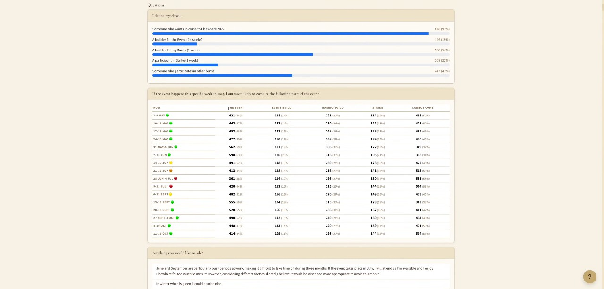
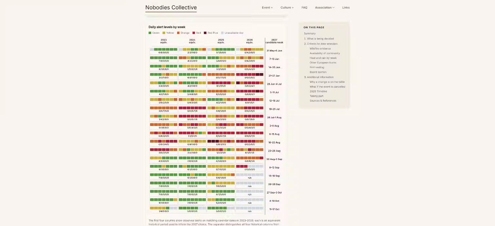
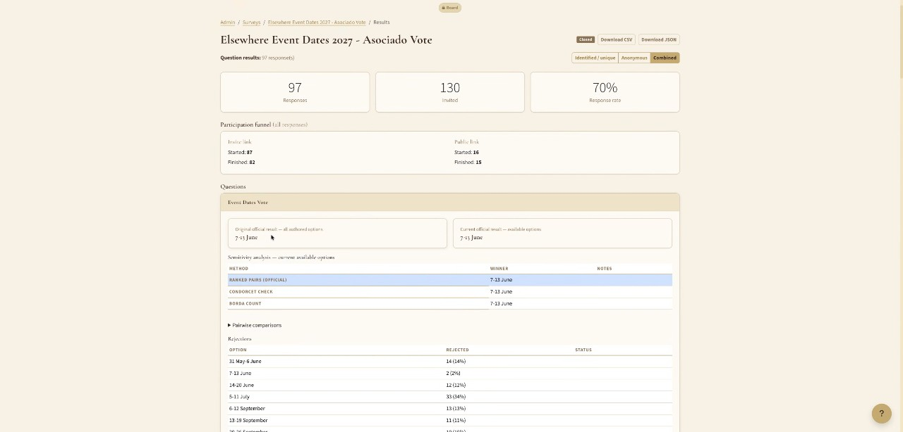
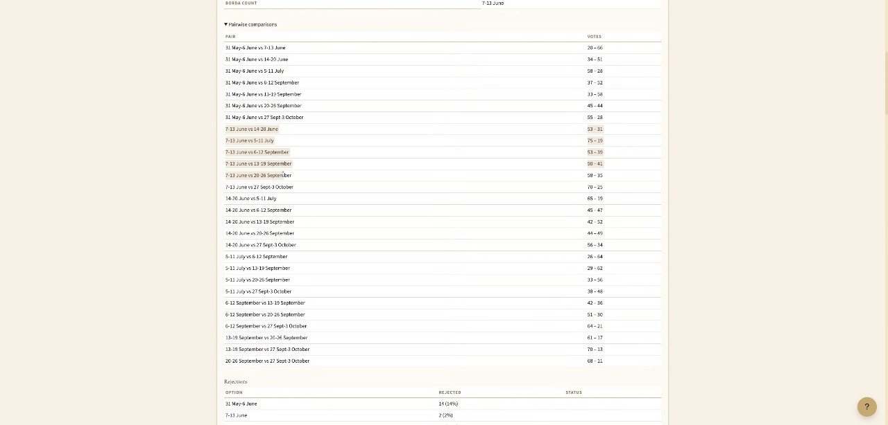

General Assembly
Full Records
The association’s first General Assembly, held in the usual community-call slot with a single agenda item: the asociado vote on the 2027 event dates. The vote had been open asynchronously on Humans ahead of the assembly and, as the statutes require, was closed during the assembly itself. The call opened with a frank list of the ways this first GA fell short of the formal procedure, moved to an open floor on the dates while the last ballots came in, closed the vote shortly after 21:00, and read the result together live.
Key points — at a glance
- Result: the week of 7–13 June 2027 won the vote. It beat every other week on the ballot head-to-head, so there was no cycle to resolve. Against the runner-up, 6–12 September, it won 53 to 39; against 13–19 September, 50 to 41.
- Turnout: 97 of 130 asociados (75%). 84 had voted before the call began; 13 more voted during it.
- If 7–13 June is ruled out, the recount gives 6–12 September, then 13–19 September, then 20–26 September. With June removed, 6–12 September beats 13–19 September 42–36.
- The vote is not yet the final date. INAGA (Instituto Aragonés de Gestión Ambiental, the regional environmental agency — the concern is nesting birds) has been asked to clear all the shortlisted weeks, for both sites. The answer can take weeks to months and is a plain yes or no per request. Any week refused is removed and the same ballots are recounted.
- Timing: Peter D’s personal aim is a public, final date by roughly mid-November, with no changes after that. The decision on which site hosts 2027 is separate and hoped for by December.
- Full results will be published on the website — the anonymised ballots as a downloadable file, the pairwise table, and this recording — so anyone can re-run the count with any method they like.
- Procedure: the board listed where this GA diverged from the statutes and Spanish association law (votes could not be changed after submission; the voter roll was not frozen when voting opened; the formal notice was looser than it should be). Because the board had committed in advance to follow the result, nothing turns on it this time — but all of it will be fixed before any statute change or board election. If you spotted anything else, tell the board.
- Next: a 2027 Finance working group starts in October (Peter D) to build next year’s budget collaboratively — ticket price tiers, low-income allocation, a possible under-26 scheme, art spending — for a population anywhere between 1,500 and 3,000.
1. Procedure — Where This GA Fell Short, and What Changes (Daniel T, Peter D)
Daniel T opened by setting out the mechanics. The General Assembly is the meeting at which the vote happens: it cannot be closed beforehand, but the statutes allow asynchronous voting ahead of a GA. The ballot was sealed — nobody, including the administrators, could see any results until it was closed. At the start of the call 84 of 130 asociados had voted. Minutes will be available in Spanish, French, Italian and German as well as English.
He then listed the ways this first GA did not quite fit the statutes and the law. Since the board had committed in advance to follow the result of this vote, none of them affects the outcome — but for statute changes and board elections the procedure has to be beyond challenge, so that nobody can later say a change is invalid or a board member’s position is in doubt.
- Changing your vote. In a GA you should be able to vote, and to change your vote, until the vote closes. The dates ballot was built on the survey system: once submitted, a ballot is detached from the voter’s profile and cannot be edited. That weakens the point of holding the meeting, and will change.
- A fixed voter roll. Peter D found that under Spanish association law the list of eligible voters is fixed at the moment voting opens. It was not: when the vote opened, about half the board was not yet recorded as asociados in the system, and more people were added over the following days. Being flexible was right this time; for an election or statute change it must be done to the letter. Peter D added that the rule cuts both ways — someone who leaves the association during a vote still has their vote counted. This comes from the law, not the statutes; the statutes sit as a layer on top of the law, so the statutes alone do not tell you everything that applies.
- Formal notice. The dates process has been discussed for a month and a half — on the website, in several emails naming 17 September, in board minutes since shortly after the event. But the next GA will have a clear, formal convocation emailed to all asociados on the proper timeline.
Peter D described the governance-specific voting module he has built in Humans, not yet used for this vote: results hidden until the vote closes, but live turnout visible (so quorum can be checked); an audit log, so a voter can see that they voted A and later changed to B; whether individual votes are visible is a per-vote setting; a default two-week voting window with a reminder the day before; and a close button to be pressed during the meeting itself. It is tied to asociado status rather than to surveys.
Questions from the chat. Can new asociados be accepted while a vote is open? (Victor P) — Yes, through the normal process, but they are not on the roll for that vote: the roll is taken when voting opens. Is that when the vote is announced or when it opens? (Anna T) — When it opens; an election could be announced six months ahead and the roll fixed only when voting starts. The statutes do not currently say how long an asynchronous vote must stay open; that could be added by statute change.
Who is an asociado? One attendee who had not received a voting link turned out not to be registered as an asociado. Peter D: it is not automatic — qualifying is not enough, you have to apply, and be accepted by the board, before the vote opens. Daniel T recalled the criteria on the website: a lead or metalead (or equivalent core contributor) at this or a similar event; active outside the event for more than three months; or a camp lead. “Lead” within a camp is blurry, so the rule of thumb is that asociados should be no more than about 5% of a camp — many people carry a lead title without being core contributors. Apologies to anyone the board did not manage to process in time.
Daniel T asked anyone with an eye for organisational procedure — on the call or watching the recording — to point out anything else that was missed: “much better to have two thousand pairs of eyes on this than a few.”
Timeline for the evening: procedure until 20:20; open floor on the dates until 21:00, extendable to 21:30 at the latest; a clear warning before closing; then up to half an hour reading the results page together.
2. Open Floor on the Dates
Turnout was read out as the discussion went: 90, then 93 (72%), then 96.
Andrew S (founder of the Shh! barrio, attending since 2009) thanked everyone behind this year’s event and the new website and systems. The heat was always part of the deal, and always something of a worry; in the last few years it has become too much — he has wondered whether returning is good for his health, and he no longer runs afternoon events he used to run. Beyond the cooking and gas bans, the heat is now actively putting people off, and that threatens the event’s survival and growth. His preference: one month earlier, end of May or first week of June, as a kick-start to the summer rather than “the hangover after Burning Man”. On term time: early July is already term time for many — the co-creator of his barrio could never come back after taking a teaching job.
Jonathan C personally likes the physical challenge; it brings out a certain kind of person and forces creativity. But it is also an accessibility issue, and a cancellation mid-event means somebody still has to strike the site — coming from Germany, he could not be that person. He weighted “make sure there is an event” above his own preference. Voting for the heat as the spirit of the burn is a completely valid position; he tried to balance the priorities.
Condor did not repeat his case for September from two weeks ago beyond a summary: Borderland and Burning Man are admin-heavy and eat the spring; in his city everyone goes to Borderland and hardly anyone to Nowhere — the heat, and the two-at-once problem. A September date lets groups plan another burn in spring and make the final push for Elsewhere afterwards, which is good for growth. His main point was different: many are invested in one answer, and after the vote some will not be able to come at all. Embrace whatever date wins, pull in the same direction, and have empathy for those it does not work for. “Whatever we end up with, it’s not going to be as bad as 45 degrees in the middle of cancellation season.”
Daniel T thanked Céline S, Olivier (Ankhor) and Peter K for putting the process together in the middle of summer: “as much as I am crazy, I just couldn’t have done this myself.”
From the chat — is there data on why people don’t come? Daniel T: a survey on reasons for not attending was shared on Discord; it pointed to several changes worth pursuing, some already under way (the sound policy, for instance). This vote is specifically about wildfire risk. Peter D: camp leads have told him they have lost people to the heat over the years who might return at a less hostile time. Any date will conflict with part of the audience — it is a gamble: with invented numbers, lose 10%, gain 30%. That net gain means nothing to the person who can no longer come, but for the community’s longevity these decisions have to be made.
From the chat — when is the decision announced? Daniel T: the result of the vote tonight; the final date depends on INAGA (see section 4). Peter D: his personal preference is that nothing changes after roughly mid-November — late enough for the approvals to arrive, early enough for people planning their year.
From the chat — finances and growth. Peter D: break-even this year was roughly 1,700 participants; the event ended slightly in the green, with some departments cut back. Growth is partly about bringing younger people into an ageing community and filling out the parties. The target is 2,500 to 3,000 — not 4,000. At that size ticket prices can come down, art funding go up and low-income provision expand.
From the chat — clashes with other events (Paloma Z). Daniel T: several people reached out to other events, and the survey asked not only who could attend each week but who could come for event build, barrio build and strike. For every shortlisted week, enough people said they could. Anna T found it one of the survey’s surprises: people who could come in a given week could mostly come for build and strike too — the proportions barely moved. Daniel T showed the survey results on screen (also on the website, with a downloadable data file).
{kind=link}

Benoit also loves the heat, and agrees with Jonathan that cancellation cannot be risked, so July–August is out. But late May and June are a bad choice for long-term growth: “head to head” does not only mean the same week — with family and limited holiday, most people cannot do two burns within a month (Kiez Burn, Where the Sheep Sleep). Elsewhere should be part of the wider European burn community rather than competing with it, and open to people whose home burn is elsewhere. He will come whenever it is; September is the only viable choice that keeps some heat and lets others join. Daniel T: Burning Nest gave the fullest reply — they cannot move (tied to their site, date and a bank holiday), they understand why Elsewhere needs to change and appreciated that there is a process; they would rather the dates did not move closer, and accept that they might.
Paloma Z asked why the last week of June and the first days of July were not on the ballot: in 2023 and 2024 the event started around 1 July, the weather was markedly better and there were no red-alert stoppages — early enough to help, not so early as to clash with other events or with a three-week build. Daniel T: after community consultation, the model was a board shortlist followed by a community vote; it came to eight weeks — the current week, three earlier and four later. On the daily fire-alert chart, the alert pattern has shifted a lot over the years; the board judged those two weeks no more viable than the current one — this year the event would have been cancelled in either. Paloma: that answers it.
{kind=link}

Joël thanked the team for the information on the website — weather, dates, survey. When people came to him with questions he could point them to the site and it answered most of them. Daniel T: to a large degree the community produced it — about 950 survey responses, without which the shortlisting could not have been done.
Maximilian K: people who attend several burns a year are probably a small, very keen demographic. The availability data comes from a much broader group, and shows broad availability in June as well as September. Take frequent burners into account, but not as a main factor.
Benoit agreed that if the survey showed a large gap the survey should win — but June and September are close, and the survey cannot reach people who are not yet part of the community. Condor: the survey’s anonymous (not logged-in) respondents skewed towards September — plausibly people who do not currently come because of the dates. Borderland people he speaks to are far more enthusiastic about September. Most European burners live in northern climates where June is packed with festivals; by September summer is over and a trip to a hot burn in the south appeals.
Edmund S voiced a personal concern in the other direction: that Elsewhere could become too pleasant. At another, more clement burn he met people who plainly did not know the principles, which has never happened to him at Nowhere. The heat filters the crowd. He does not want a cancellation, but would be wary of making it too mild. Daniel T, from Barcelona: June and September in Spain are still hot, and it is still the desert. Andrew S: he comes for the pressure cooker and goes to no other burn for that reason — but there is a point where it becomes unhealthy. June or September, it will still be hot; it has to grow and attract new people or it will die; “we’re not there to torture ourselves.” Katia S, on Edmund’s point: the change in Borderland’s crowd has nothing to do with water on site or being near cities — the Stockholm community grew very quickly and many now come only for the weekend. She thinks September could be a good option. (Having lost her voting link, she was given it on the call and had time to vote.)
Ward D: bird restrictions usually run from April or May to June, and may be a real obstacle on the new land. September avoids the Rojo Plus period and the nesting season, and falls before the academic year starts in much of Europe (mid to late September), which opens the event to people in the academic world. His personal preference would be June; with his organisational hat on, September. He asked what happens if INAGA refuses the new land in nesting season. Daniel T: the choice of site is a separate decision, hoped for by December. Permits have been requested for both sites, so there will be an answer per site per set of dates; if the permitted weeks differ between sites, that will have to be worked out then — he has no clear answer yet. It is one reason he has tried to keep the site question and the dates question apart: each is complex enough alone.
Pablo V: the stakes are high and changing the date matters — but this is a test for one year. He has been part of events that changed date, month, even season from year to year. If it goes badly, it is one year and a lot will be learned. The process was as good as it could be: the community is clear on why it is moving, just not yet where to. Whatever comes out, commit and embrace it.
Joël: what happens if there is a new date and ticket sales plummet? Daniel T: the shortlisted weeks are those where many people said they intend to come, so selling no tickets is very unlikely. More, fewer or the same is unknowable: lower heat may bring people back, there may be overflow from other burns — there are arguments every way.
3. 2027 Finance Working Group (Peter D)
Peter D used the question to announce a 2027 Finance working group, starting in October, to build next year’s budget collaboratively. Some costs are fixed (toilets do not get cheaper). The levers the group can set: ticket price tiers; the number of low-income tickets; a possible under-26 scheme to bring younger people in; art spending; and revenue gates — as ticket sales reach a given level, money is released for creative and other spending. Next year’s plan should be “a little less off the cuff and a little more thoughtful” — partly because it has to be: the association needs a budget that the association has agreed, and he would rather not write it alone. It has to work for anything from 1,500 to 3,000 participants; where in that range the event lands cannot be predicted nine months out.
Daniel T: anyone wanting a working group even more polarising than event dates should join the one on ticket prices. More generally, working groups are how things get done between events: anyone can register one, it does not need to sit within a department, and the details are on the website and on Discord.
From the chat — will there be a public information campaign? Daniel T: yes. The new date will need a proper outreach campaign.
4. Closing the Vote and the Result
At 21:02 Daniel T started a one-minute timer, to be restarted whenever someone spoke. After the exchanges above, and a request from Benoit to close the vote and continue the conversation afterwards, a final call was made for anyone still voting. The vote was closed at about 21:10 with 97 ballots — 75% of the 130 asociados. Daniel T closed it off-screen and opened the results page for the first time on the shared screen.
The winning week is 7–13 June 2027.
{kind=link}

- It beat every other week on the ballot in head-to-head comparison, so there is no cycle and no tie-break was needed.
- 7–13 June vs 6–12 September: 53–39 (a margin of 14). 7–13 June vs 13–19 September: 50–41.
- If 7–13 June is removed (for example, refused by INAGA) and the ballots recounted: 6–12 September wins — beating 13–19 September 42–36 and 20–26 September 51–30. Remove that too and it is 13–19 September; then 20–26 September. With all three September weeks removed, the result moves back to June (14–20 June, on the pairwise table). September takes over if 7–13 June goes; if 7–13 June is available, it wins.
Pablo V noted that 7–13 June was also the week with the most people available for build, which takes risk out of build even if ticket sales remain to be seen. Jonathan C: his birthday will now fall during build, “the thing I enjoy doing most in life”.
Joao T asked for the margins: it is odd to see the result of a vote with no numbers, and with one June week followed by three September weeks, people will want to know how close it was. Daniel T read out the pairwise figures above. The full pairwise table is on the results page and will be public with the data; the interactive explanation of the method is on the voting-method page. Anyone is free to run the ballots through a different algorithm and to argue for a different method next time — but this is the method that was agreed before voting.
{kind=link}

Peter D shared an instant-runoff (ranked-choice) count of the same ballots for comparison. Same winner: 7–13 June, with about 20% of first preferences in round one. The two methods diverge below first place: with 7–13 June removed, instant-runoff gives 13–19 September rather than 6–12 September, with 6–12 September next — the two are close. Jonathan C pointed out that intermediate instant-runoff rounds cannot be read as a ranking of second and third place. Daniel T: every method has strengths and weaknesses. Ranked Pairs (Tideman) was chosen because it handles split support well — if most voters prefer September but spread their first choices across three September weeks against one June week, it still finds the week that a majority ranks above each alternative: possibly not your first choice, but preferred to every other option by most people. Peter D also spotted that the JSON export was missing the results section; it will be fixed, or the CSV published instead.
INAGA and the birds. From the chat: is there a Discord thread on the bird question? Daniel T: there is little to discuss until INAGA answers. Everything that could be researched without them is on the bird-nesting page, linked from the event-dates page: which protected bird areas are near each site and what the regulations say. How INAGA will interpret them is not known. He asked whether anyone had a past INAGA report that might show how they reason. Daniela M S: there is no report. Environmental checks — flora, fauna, flooding — have been part of permitting, by this agency or a predecessor, but the applicant receives only an answer, yes or no; even the comarca gets no reasoning. Daniel T: then it was a futile quest. “The birds have the final vote.”
5. Close
Daniel T asked once more for any procedural points people noticed, so that the next GA is tight: “so we don’t end up with board members of unknown legal status, because that would suck — or statute changes that can be pushed back on.”
Pablo V: this was not only finishing a vote but finishing the infrastructure for one — the working group, the organisation, the ways of involving people. That learning is now an asset. Kudos to the team who pushed it, to Humans, and to everyone who took part, read the reports and asked questions: “really encouraging to see the community step up like this.”
Daniel T invited other working groups to reuse the pattern where it worked — community calls, surveys, a working group, Discord discussion — and to improve on it, since there are a few more controversial decisions on the plate: “for some reason we don’t agree about everything.” He thanked everyone for joining, voting and taking part. It is not yet certain whether there will be a community call next week. The meeting closed at about 21:30.
Decisions
- The asociado vote on the 2027 event dates was closed at the General Assembly with 97 of 130 ballots cast (75%).
- Result: 7–13 June 2027, by Ranked Pairs (Tideman), as the week preferred head-to-head over every other week. Order if weeks are removed: 6–12 September, 13–19 September, 20–26 September.
- The final date remains subject to INAGA clearance; any week refused is removed and the same ballots recounted, as agreed before the vote.
Action Items
| Who | What |
|---|---|
| Daniel T | Publish the full results — anonymised ballots (CSV; JSON once the export is fixed), pairwise table — and this recording on the website |
| Daniel T / Peter D | Fix the JSON export so it includes the results section |
| Board | For the next GA: formal convocation to all asociados on the statutory timeline; voter roll frozen at opening; votes changeable until close; use the governance voting module in Humans |
| Daniela M S / Board | Follow up the INAGA requests (all shortlisted weeks, both sites); on the answer, remove any refused week and publish the recount |
| Board | Site decision for 2027 — target December |
| Peter D | Start the 2027 Finance working group in October |
| Board / Comms | Outreach campaign once the date is final |
| Everyone | Report any procedural gaps noticed in this GA to the board |
Registros completos
La primera Asamblea General de la asociación, celebrada en el hueco habitual de la llamada comunitaria con un único punto del orden del día: la votación de los asociados sobre las fechas del evento de 2027. La votación había estado abierta de forma asíncrona en Humans antes de la asamblea y, como exigen los estatutos, se cerró durante la propia asamblea. La llamada empezó con un repaso franco de en qué se quedó corta esta primera Asamblea General respecto al procedimiento formal, pasó a un turno abierto sobre las fechas mientras llegaban las últimas papeletas, cerró la votación poco después de las 21:00, y leyó el resultado juntos, en directo.
Puntos clave — de un vistazo
- Resultado: la semana del 7–13 de junio de 2027 ganó la votación. Venció a todas las demás semanas de la papeleta en comparaciones directas, así que no hubo ningún ciclo que resolver. Frente a la segunda clasificada, el 6–12 de septiembre, ganó por 53 a 39; frente al 13–19 de septiembre, 50 a 41.
- Participación: 97 de 130 asociados (75%). 84 habían votado antes de que empezara la llamada; 13 más votaron durante ella.
- Si se descarta el 7–13 de junio, el recuento da como resultado 6–12 de septiembre, después el 13–19 de septiembre, después el 20–26 de septiembre. Sin junio, el 6–12 de septiembre vence al 13–19 de septiembre por 42–36.
- La votación aún no es la fecha definitiva. Se ha pedido a INAGA (Instituto Aragonés de Gestión Ambiental, la agencia medioambiental regional — la preocupación son las aves nidificantes) que autorice todas las semanas de la lista corta, para ambos emplazamientos. La respuesta puede tardar de semanas a meses y es un simple sí o no por cada solicitud. Cualquier semana rechazada se elimina y se recuentan las mismas papeletas.
- Calendario: el objetivo personal de Peter D es una fecha pública y definitiva hacia mediados de noviembre, sin cambios después. La decisión sobre qué emplazamiento acogerá 2027 es independiente y se espera para diciembre.
- Los resultados completos se publicarán en la web — las papeletas anonimizadas como archivo descargable, la tabla de comparaciones por pares y esta grabación — para que cualquiera pueda repetir el recuento con el método que prefiera.
- Procedimiento: la junta directiva enumeró en qué se apartó esta Asamblea General de los estatutos y de la ley española de asociaciones (no se podía cambiar el voto una vez enviado; el censo de votantes no quedó cerrado cuando se abrió la votación; la convocatoria formal fue más laxa de lo que debería). Como la junta directiva se había comprometido de antemano a respetar el resultado, nada de esto cambia el resultado esta vez — pero todo se corregirá antes de cualquier cambio de estatutos o elección de la junta directiva. Si detectasteis algún otro fallo, decidlo a la junta directiva.
- Próximo paso: un grupo de trabajo de Finanzas 2027 arranca en octubre (Peter D) para elaborar de forma colaborativa el presupuesto del próximo año — tramos de precio de entrada, asignación para rentas bajas, un posible esquema para menores de 26 años, gasto en arte — para una población de entre 1.500 y 3.000 personas.
1. Procedimiento — en qué se quedó corta esta Asamblea General, y qué cambia (Daniel T, Peter D)
Daniel T abrió explicando la mecánica. La Asamblea General es la reunión en la que se produce la votación: no puede cerrarse de antemano, pero los estatutos permiten la votación asíncrona antes de una Asamblea General. La papeleta estaba sellada — nadie, ni siquiera los administradores, podía ver ningún resultado hasta que se cerrara. Al comienzo de la llamada habían votado 84 de 130 asociados. El acta estará disponible en español, francés, italiano y alemán, además de en inglés.
A continuación enumeró en qué no encajaba del todo esta primera Asamblea General con los estatutos y la ley. Como la junta directiva se había comprometido de antemano a respetar el resultado de esta votación, nada de esto afecta al resultado — pero para los cambios de estatutos y las elecciones de la junta directiva, el procedimiento tiene que ser incuestionable, para que nadie pueda decir después que un cambio no es válido o que la posición de un miembro de la junta directiva está en duda.
- Cambiar el voto. En una Asamblea General debería poder votarse, y cambiarse el voto, hasta que se cierre la votación. La papeleta de fechas se construyó sobre el sistema de encuestas: una vez enviada, una papeleta queda desvinculada del perfil del votante y no se puede editar. Eso debilita el sentido de celebrar la reunión, y va a cambiar.
- Un censo de votantes fijo. Peter D descubrió que, según la ley española de asociaciones, la lista de votantes con derecho a voto queda fijada en el momento en que se abre la votación. No fue así: cuando se abrió la votación, cerca de la mitad de la junta directiva todavía no constaba como asociados en el sistema, y se fue añadiendo más gente en los días siguientes. Ser flexibles fue correcto esta vez; para una elección o un cambio de estatutos hay que hacerlo al pie de la letra. Peter D añadió que la regla funciona en ambos sentidos — a quien abandona la asociación durante una votación se le sigue contando el voto. Esto viene de la ley, no de los estatutos; los estatutos son una capa que se añade sobre la ley, así que los estatutos por sí solos no dicen todo lo que aplica.
- Convocatoria formal. El proceso de las fechas se ha estado debatiendo desde hace mes y medio — en la web, en varios correos que mencionaban el 17 de septiembre, en las actas de la junta directiva desde poco después del evento. Pero la próxima Asamblea General tendrá una convocatoria formal y clara, enviada por correo a todos los asociados dentro del plazo que corresponde.
Peter D describió el módulo de votación específico para gobernanza que ha construido en Humans, todavía no utilizado en esta votación: resultados ocultos hasta que se cierra la votación, pero con la participación visible en tiempo real (para poder comprobar el quórum); un registro de auditoría, para que un votante pueda ver que votó A y después cambió a B; si los votos individuales son visibles es una opción configurable por cada votación; una ventana de votación por defecto de dos semanas con un recordatorio el día anterior; y un botón de cierre que se pulsa durante la propia reunión. Está vinculado al estatus de asociado, en lugar de a las encuestas.
Preguntas del chat. ¿Se pueden aceptar nuevos asociados mientras una votación está abierta? (Victor P) — Sí, mediante el proceso normal, pero no entran en el censo de esa votación: el censo se toma en el momento en que se abre la votación. ¿Eso es cuando se anuncia la votación o cuando se abre? (Anna T) — Cuando se abre; una elección podría anunciarse con seis meses de antelación y el censo fijarse solo cuando empieza la votación. Los estatutos actualmente no dicen cuánto tiempo debe permanecer abierta una votación asíncrona; eso podría añadirse mediante un cambio de estatutos.
¿Quién es asociado? Un asistente que no había recibido enlace de votación resultó no estar registrado como asociado. Peter D: no es automático — cumplir los requisitos no basta, hay que solicitarlo, y ser aceptado por la junta directiva, antes de que se abra la votación. Daniel T recordó los criterios publicados en la web: ser lead o metalead (o contribuidor central equivalente) en este evento o uno similar; estar activo fuera del evento durante más de tres meses; o ser lead de un barrio. El término “lead” dentro de un barrio es impreciso, así que la regla general es que los asociados no deberían superar aproximadamente el 5% de un barrio — mucha gente lleva el título de lead sin ser contribuidores centrales. Disculpas a quien la junta directiva no haya podido procesar a tiempo.
Daniel T pidió a cualquiera con ojo para el procedimiento organizativo — en la llamada o viendo la grabación — que señalara cualquier otra cosa que se hubiera pasado por alto: “es mucho mejor tener dos mil pares de ojos sobre esto que unos pocos.”
Calendario de la noche: procedimiento hasta las 20:20; turno abierto sobre las fechas hasta las 21:00, ampliable como muy tarde hasta las 21:30; un aviso claro antes del cierre; y después hasta media hora leyendo juntos la página de resultados.
2. Turno abierto sobre las fechas
La participación se fue anunciando a medida que avanzaba el debate: 90, después 93 (72%), después 96.
Andrew S (fundador del barrio Shh!, asistente desde 2009) agradeció a todos los responsables del evento de este año y de la nueva web y los nuevos sistemas. El calor siempre formó parte del trato, y siempre fue motivo de cierta preocupación; en los últimos años se ha vuelto excesivo — se ha preguntado si volver es bueno para su salud, y ya no organiza los eventos vespertinos que solía organizar. Más allá de las prohibiciones de cocinar y de gas, el calor ahora está activamente disuadiendo a la gente, y eso amenaza la supervivencia y el crecimiento del evento. Su preferencia: un mes antes, finales de mayo o la primera semana de junio, como pistoletazo de salida del verano en lugar de “la resaca después de Burning Man”. Sobre el calendario escolar: principios de julio ya coincide con el curso escolar para muchos — el cocreador de su barrio nunca pudo volver después de aceptar un trabajo de profesor.
Jonathan C personalmente disfruta del reto físico; saca a relucir un cierto tipo de persona y obliga a la creatividad. Pero también es una cuestión de accesibilidad, y una cancelación a mitad de evento significa que alguien igualmente tiene que desmontar el sitio — viniendo de Alemania, él no podría ser esa persona. Dio más peso a “asegurar que haya evento” que a su propia preferencia. Votar por el calor como el espíritu del burn es una postura completamente válida; intentó equilibrar las prioridades.
Condor no repitió su argumento a favor de septiembre de hace dos semanas más allá de un resumen: Borderland y Burning Man exigen mucha gestión y se comen la primavera; en su ciudad todo el mundo va a Borderland y casi nadie a Nowhere — el calor, y el problema de que coincidan dos a la vez. Una fecha en septiembre permite a los grupos planear otro burn en primavera y dar el empujón final para Elsewhere después, lo cual es bueno para el crecimiento. Su punto principal era otro: mucha gente está volcada en una respuesta, y después de la votación algunos no podrán venir en absoluto. Acoged la fecha que sea que gane, tirad todos en la misma dirección, y tened empatía con aquellos a quienes no les funcione. “Sea lo que sea con lo que acabemos, no va a ser tan malo como 45 grados en plena temporada de cancelaciones.”
Daniel T dio las gracias a Céline S, Olivier (Ankhor) y Peter K por haber montado el proceso en pleno verano: “por muy loco que esté, no podría haber hecho esto yo solo.”
Desde el chat — ¿hay datos sobre por qué la gente no viene? Daniel T: se compartió en Discord una encuesta sobre los motivos para no asistir; apuntaba a varios cambios que merece la pena impulsar, algunos ya en marcha (la política de sonido, por ejemplo). Esta votación trata específicamente del riesgo de incendios. Peter D: los leads de barrio le han dicho que a lo largo de los años han perdido gente por el calor que podría volver en un momento menos hostil. Cualquier fecha entrará en conflicto con parte del público — es una apuesta: con números inventados, perder un 10%, ganar un 30%. Esa ganancia neta no significa nada para la persona que ya no puede venir, pero para la longevidad de la comunidad hay que tomar estas decisiones.
Desde el chat — ¿cuándo se anuncia la decisión? Daniel T: el resultado de la votación de esta noche; la fecha definitiva depende de INAGA (véase la sección 4). Peter D: su preferencia personal es que nada cambie después de mediados de noviembre aproximadamente — lo bastante tarde para que lleguen las autorizaciones, lo bastante pronto para quienes planifican su año.
Desde el chat — finanzas y crecimiento. Peter D: el punto de equilibrio este año fue de aproximadamente 1.700 participantes; el evento cerró ligeramente en positivo, con recortes en algunos departamentos. El crecimiento tiene que ver en parte con incorporar gente más joven a una comunidad que envejece y con llenar las fiestas. El objetivo es de 2.500 a 3.000 — no 4.000. Con ese tamaño, los precios de las entradas pueden bajar, la financiación para arte puede subir y la provisión para rentas bajas puede ampliarse.
Desde el chat — choques con otros eventos (Paloma Z). Daniel T: varias personas se pusieron en contacto con otros eventos, y la encuesta preguntaba no solo quién podía asistir cada semana, sino quién podía venir para el montaje del evento, el montaje del barrio y el desmontaje. Para cada semana de la lista corta, suficiente gente dijo que podía. Anna T lo encontró una de las sorpresas de la encuesta: quienes podían venir en una semana dada, en su mayoría también podían venir para el montaje y el desmontaje — las proporciones apenas variaron. Daniel T mostró en pantalla los resultados de la encuesta (también disponibles en la web, con un archivo de datos descargable).
Benoit también adora el calor, y coincide con Jonathan en que no se puede arriesgar una cancelación, así que julio–agosto queda descartado. Pero finales de mayo y junio son una mala elección para el crecimiento a largo plazo: “cara a cara” no significa solo la misma semana — con familia y vacaciones limitadas, la mayoría de la gente no puede hacer dos burns en el mismo mes (Kiez Burn, Where the Sheep Sleep). Elsewhere debería formar parte de la comunidad europea de burns en general, en lugar de competir con ella, y estar abierto a gente cuyo burn de referencia esté en otro lugar. Él vendrá sea cuando sea; septiembre es la única opción viable que conserva algo de calor y permite que se sumen otros. Daniel T: Burning Nest dio la respuesta más completa — ellos no pueden moverse (atados a su emplazamiento, su fecha y un día festivo), entienden por qué Elsewhere necesita cambiar y agradecieron que exista un proceso; preferirían que las fechas no se acercaran, y aceptan que podría pasar.
Paloma Z preguntó por qué la última semana de junio y los primeros días de julio no estaban en la papeleta: en 2023 y 2024 el evento empezó en torno al 1 de julio, el tiempo era claramente mejor y no hubo paradas por alerta roja — lo bastante pronto para ayudar, no tan pronto como para chocar con otros eventos o con un montaje de tres semanas. Daniel T: tras la consulta a la comunidad, el modelo fue una lista corta de la junta directiva seguida de una votación comunitaria; resultó en ocho semanas — la semana actual, tres anteriores y cuatro posteriores. Según el gráfico diario de alertas de incendio, el patrón de alertas ha cambiado mucho a lo largo de los años; la junta directiva juzgó que esas dos semanas no eran más viables que la actual — este año el evento se habría cancelado en cualquiera de las dos. Paloma: eso responde a la pregunta.
Joël agradeció al equipo la información de la web — tiempo, fechas, encuesta. Cuando la gente le planteaba preguntas, podía remitirlos a la web y esta respondía a la mayoría. Daniel T: en gran medida la produjo la comunidad — unas 950 respuestas a la encuesta, sin las cuales no se habría podido hacer la lista corta.
Maximilian K: la gente que asiste a varios burns al año es probablemente un grupo pequeño y muy entusiasta. Los datos de disponibilidad vienen de un grupo mucho más amplio, y muestran una disponibilidad amplia tanto en junio como en septiembre. Hay que tener en cuenta a los burners frecuentes, pero no como factor principal.
Benoit coincidió en que si la encuesta mostrara una diferencia grande, debería ganar la encuesta — pero junio y septiembre están cerca, y la encuesta no puede llegar a la gente que todavía no forma parte de la comunidad. Condor: los encuestados anónimos (sin sesión iniciada) de la encuesta se inclinaban hacia septiembre — probablemente gente que actualmente no viene por las fechas. La gente de Borderland con la que habla está mucho más entusiasmada con septiembre. La mayoría de los burners europeos viven en climas del norte, donde junio está repleto de festivales; para septiembre el verano ya ha terminado y un viaje a un burn caluroso en el sur resulta atractivo.
Edmund S expresó una preocupación personal en el sentido contrario: que Elsewhere pudiera volverse demasiado agradable. En otro burn más clemente conoció a gente que claramente no conocía los principios, algo que nunca le ha pasado en Nowhere. El calor filtra al público. No quiere una cancelación, pero tendría cautela con suavizarlo demasiado. Daniel T, desde Barcelona: junio y septiembre en España siguen siendo calurosos, y sigue siendo el desierto. Andrew S: él viene por la olla a presión y por eso no va a ningún otro burn — pero hay un punto en el que se vuelve insano. En junio o en septiembre, seguirá haciendo calor; tiene que crecer y atraer gente nueva o morirá; “no estamos aquí para torturarnos.” Katia S, sobre el punto de Edmund: el cambio en el público de Borderland no tiene nada que ver con el agua en el sitio ni con estar cerca de ciudades — la comunidad de Estocolmo creció muy rápido y muchos ahora vienen solo el fin de semana. Cree que septiembre podría ser una buena opción. (Habiendo perdido su enlace de votación, se le facilitó en la llamada y tuvo tiempo de votar.)
Ward D: las restricciones por aves normalmente van de abril o mayo a junio, y pueden ser un obstáculo real en el nuevo terreno. Septiembre evita el periodo de Rojo Plus y la temporada de nidificación, y cae antes de que empiece el curso escolar en buena parte de Europa (de mediados a finales de septiembre), lo cual abre el evento a gente del ámbito académico. Su preferencia personal sería junio; con el sombrero de organizador puesto, septiembre. Preguntó qué pasa si INAGA rechaza el nuevo terreno en temporada de nidificación. Daniel T: la elección del emplazamiento es una decisión aparte, que se espera para diciembre. Se han solicitado permisos para ambos emplazamientos, así que habrá una respuesta por emplazamiento y por conjunto de fechas; si las semanas permitidas difieren entre emplazamientos, eso habrá que resolverlo entonces — todavía no tiene una respuesta clara. Es una de las razones por las que ha intentado mantener separadas la cuestión del emplazamiento y la cuestión de las fechas: cada una ya es lo bastante compleja por sí sola.
Pablo V: lo que está en juego es importante y cambiar la fecha importa — pero esto es una prueba de un año. Él ha formado parte de eventos que cambiaron de fecha, de mes, incluso de estación de un año a otro. Si sale mal, es un año y se aprenderá mucho. El proceso fue tan bueno como podía ser: la comunidad tiene claro por qué se mueve, solo que todavía no adónde. Sea lo que sea lo que salga, comprometerse y acogerlo.
Joël: ¿qué pasa si hay una fecha nueva y se desploman las ventas de entradas? Daniel T: las semanas de la lista corta son aquellas en las que mucha gente dijo que tenía intención de venir, así que es muy improbable que no se venda ninguna entrada. Si serán más, menos o las mismas es algo que no se puede saber: un calor menor puede hacer que vuelva gente, puede haber desbordamiento de otros burns — hay argumentos en todas las direcciones.
3. Grupo de trabajo de Finanzas 2027 (Peter D)
Peter D aprovechó la pregunta para anunciar un grupo de trabajo de Finanzas 2027, que arranca en octubre, para elaborar de forma colaborativa el presupuesto del próximo año. Algunos costes son fijos (los baños no se abaratan). Las palancas que el grupo puede ajustar: los tramos de precio de las entradas; el número de entradas para rentas bajas; un posible esquema para menores de 26 años que atraiga a gente más joven; el gasto en arte; y umbrales de ingresos — a medida que las ventas de entradas alcanzan un nivel determinado, se libera dinero para gasto creativo y de otro tipo. El plan del próximo año debería ser “un poco menos improvisado y un poco más meditado” — en parte porque tiene que serlo: la asociación necesita un presupuesto que la asociación haya aprobado, y él prefiere no redactarlo solo. Tiene que funcionar para cualquier cifra entre 1.500 y 3.000 participantes; en qué punto de ese rango caerá el evento no se puede predecir con nueve meses de antelación.
Daniel T: quien quiera un grupo de trabajo aún más polémico que el de las fechas del evento debería unirse al de los precios de las entradas. En general, los grupos de trabajo son la forma en que se hacen las cosas entre eventos: cualquiera puede registrar uno, no necesita estar dentro de un departamento, y los detalles están en la web y en Discord.
Desde el chat — ¿habrá una campaña de información pública? Daniel T: sí. La nueva fecha necesitará una campaña de difusión como es debido.
4. Cierre de la votación y resultado
A las 21:02 Daniel T puso en marcha un temporizador de un minuto, que se reiniciaba cada vez que alguien hablaba. Tras los intercambios anteriores, y una petición de Benoit para cerrar la votación y continuar la conversación después, se hizo una última llamada para quien todavía estuviera votando. La votación se cerró hacia las 21:10 con 97 papeletas — el 75% de los 130 asociados. Daniel T la cerró fuera de pantalla y abrió por primera vez la página de resultados en la pantalla compartida.
La semana ganadora es el 7–13 de junio de 2027.
- Venció a todas las demás semanas de la papeleta en comparación directa, así que no hay ningún ciclo y no hizo falta ningún desempate.
- 7–13 de junio frente a 6–12 de septiembre: 53–39 (una diferencia de 14). 7–13 de junio frente a 13–19 de septiembre: 50–41.
- Si se elimina el 7–13 de junio (por ejemplo, si INAGA lo rechaza) y se recuentan las papeletas: gana el 6–12 de septiembre — venciendo al 13–19 de septiembre por 42–36 y al 20–26 de septiembre por 51–30. Si también se elimina esa, es el 13–19 de septiembre; después el 20–26 de septiembre. Con las tres semanas de septiembre eliminadas, el resultado vuelve a junio (14–20 de junio, según la tabla de comparaciones por pares). Septiembre toma el relevo si desaparece el 7–13 de junio; si el 7–13 de junio está disponible, gana.
Pablo V señaló que el 7–13 de junio era también la semana con más gente disponible para el montaje, lo que reduce el riesgo del montaje aunque las ventas de entradas estén aún por ver. Jonathan C: su cumpleaños caerá ahora durante el montaje, “lo que más disfruto hacer en la vida”.
Joao T pidió los márgenes: resulta extraño ver el resultado de una votación sin cifras, y con una semana de junio seguida de tres de septiembre, la gente querrá saber cuán reñida fue. Daniel T leyó en voz alta las cifras de comparaciones por pares de arriba. La tabla completa de comparaciones por pares está en la página de resultados y se hará pública junto con los datos; la explicación interactiva del método está en la página del método de votación. Cualquiera es libre de pasar las papeletas por un algoritmo distinto y de defender un método diferente la próxima vez — pero este es el método que se acordó antes de votar.
Peter D compartió, a modo de comparación, un recuento por segunda vuelta instantánea (voto preferencial) de las mismas papeletas. Mismo ganador: el 7–13 de junio, con cerca del 20% de las primeras preferencias en la primera ronda. Los dos métodos divergen por debajo del primer puesto: eliminando el 7–13 de junio, la segunda vuelta instantánea da el 13–19 de septiembre en lugar del 6–12 de septiembre, con el 6–12 de septiembre a continuación — los dos están cerca. Jonathan C señaló que las rondas intermedias de la segunda vuelta instantánea no pueden leerse como una clasificación del segundo y tercer puesto. Daniel T: todo método tiene puntos fuertes y débiles. Se eligió Ranked Pairs (Tideman) porque gestiona bien el apoyo repartido — si la mayoría de los votantes prefiere septiembre pero reparte sus primeras opciones entre tres semanas de septiembre frente a una de junio, el método igualmente encuentra la semana que una mayoría clasifica por encima de cada alternativa: puede que no sea tu primera opción, pero es preferida a cualquier otra por la mayoría de la gente. Peter D también detectó que a la exportación en JSON le faltaba la sección de resultados; se corregirá, o en su lugar se publicará el CSV.
INAGA y las aves. Desde el chat: ¿hay un hilo de Discord sobre la cuestión de las aves? Daniel T: hay poco que discutir hasta que INAGA responda. Todo lo que se podía investigar sin ellos está en la página sobre la nidificación de aves, enlazada desde la página de fechas del evento: qué áreas protegidas de aves hay cerca de cada emplazamiento y qué dice la normativa. Cómo lo interpretará INAGA no se sabe. Preguntó si alguien tenía un informe anterior de INAGA que pudiera mostrar cómo razonan. Daniela M S: no hay ningún informe. Las comprobaciones medioambientales — flora, fauna, inundaciones — han formado parte de la tramitación de permisos, por parte de esta agencia o de una predecesora, pero el solicitante solo recibe una respuesta, sí o no; ni siquiera la comarca recibe una justificación. Daniel T: entonces fue una búsqueda inútil. “Las aves tienen el voto definitivo.”
5. Cierre
Daniel T pidió una vez más cualquier punto de procedimiento que la gente hubiera notado, para que la próxima Asamblea General sea impecable: “para que no acabemos con miembros de la junta directiva de estatus legal incierto, porque eso sería horrible — o con cambios de estatutos que se puedan impugnar.”
Pablo V: esto no fue solo terminar una votación, sino terminar la infraestructura para una — el grupo de trabajo, la organización, las formas de involucrar a la gente. Ese aprendizaje ahora es un activo. Enhorabuena al equipo que lo sacó adelante, a Humans, y a todos los que participaron, leyeron los informes e hicieron preguntas: “es muy alentador ver a la comunidad dar un paso al frente así.”
Daniel T invitó a otros grupos de trabajo a reutilizar el patrón donde haya funcionado — llamadas comunitarias, encuestas, un grupo de trabajo, debate en Discord — y a mejorarlo, ya que quedan sobre la mesa algunas decisiones aún más controvertidas: “por alguna razón no estamos de acuerdo en todo.” Agradeció a todos el haberse unido, votado y participado. Todavía no es seguro si habrá llamada comunitaria la semana que viene. La reunión se cerró hacia las 21:30.
Decisiones
- La votación de los asociados sobre las fechas del evento de 2027 se cerró en la Asamblea General con 97 de 130 papeletas emitidas (75%).
- Resultado: 7–13 de junio de 2027, según Ranked Pairs (Tideman), como la semana preferida en comparación directa frente a todas las demás. Orden si se eliminan semanas: 6–12 de septiembre, 13–19 de septiembre, 20–26 de septiembre.
- La fecha definitiva sigue sujeta a la autorización de INAGA; cualquier semana rechazada se elimina y se recuentan las mismas papeletas, tal como se acordó antes de la votación.
Acciones
| Quién | Qué |
|---|---|
| Daniel T | Publicar los resultados completos — papeletas anonimizadas (CSV; JSON en cuanto se corrija la exportación), tabla de comparaciones por pares — y esta grabación en la web |
| Daniel T / Peter D | Corregir la exportación en JSON para que incluya la sección de resultados |
| Junta directiva | Para la próxima Asamblea General: convocatoria formal a todos los asociados dentro del plazo estatutario; censo de votantes fijado en la apertura; votos modificables hasta el cierre; usar el módulo de votación de gobernanza en Humans |
| Daniela M S / Junta directiva | Hacer seguimiento de las solicitudes a INAGA (todas las semanas de la lista corta, ambos emplazamientos); al recibir la respuesta, eliminar cualquier semana rechazada y publicar el recuento |
| Junta directiva | Decisión de emplazamiento para 2027 — objetivo: diciembre |
| Peter D | Poner en marcha el grupo de trabajo de Finanzas 2027 en octubre |
| Junta directiva / Comunicación | Campaña de difusión una vez que la fecha sea definitiva |
| Todos | Informar a la junta directiva de cualquier fallo de procedimiento detectado en esta Asamblea General |
Documents complets
La première Assemblée générale de l’association, tenue dans le créneau habituel de l’appel communautaire, avec un seul point à l’ordre du jour : le vote des asociados sur les dates de l’événement 2027. Le vote avait été ouvert de manière asynchrone sur Humans avant l’assemblée et, comme l’exigent les statuts, a été fermé pendant l’assemblée elle-même. L’appel s’est ouvert par une liste franche des points sur lesquels cette première AG s’est écartée de la procédure formelle, s’est poursuivi par un tour de parole ouvert sur les dates pendant que les derniers bulletins arrivaient, a fermé le vote peu après 21:00, et a lu le résultat ensemble, en direct.
Points clés — en un coup d’œil
- Résultat : la semaine du 7–13 juin 2027 a remporté le vote. Elle a battu toutes les autres semaines du bulletin en face-à-face, si bien qu’il n’y avait pas de cycle à résoudre. Contre la seconde, 6–12 septembre, elle l’a emporté 53 contre 39 ; contre le 13–19 septembre, 50 contre 41.
- Participation : 97 asociados sur 130 (75 %). 84 avaient voté avant le début de l’appel ; 13 de plus ont voté pendant celui-ci.
- Si le 7–13 juin est écarté, le recomptage donne 6–12 septembre, puis le 13–19 septembre, puis le 20–26 septembre. Une fois juin retiré, le 6–12 septembre bat le 13–19 septembre 42–36.
- Le vote ne fixe pas encore la date définitive. Il a été demandé à l’INAGA (Instituto Aragonés de Gestión Ambiental, l’agence régionale de l’environnement — la préoccupation porte sur les oiseaux nicheurs) de donner son feu vert pour toutes les semaines présélectionnées, sur les deux sites. La réponse peut prendre de quelques semaines à plusieurs mois, et se limite à un oui ou un non par demande. Toute semaine refusée est retirée et les mêmes bulletins sont recomptés.
- Calendrier : l’objectif personnel de Peter D est une date finale rendue publique vers mi-novembre, sans changement après cela. La décision sur le site qui accueillera 2027 est distincte, et espérée pour décembre.
- Les résultats complets seront publiés sur le site web — les bulletins anonymisés sous forme de fichier téléchargeable, le tableau des comparaisons par paires, et cet enregistrement — afin que chacun puisse refaire le décompte avec la méthode de son choix.
- Procédure : le conseil a listé les points sur lesquels cette AG s’est écartée des statuts et du droit espagnol des associations (les votes ne pouvaient pas être modifiés après soumission ; la liste des votants n’a pas été figée à l’ouverture du vote ; la convocation formelle était plus lâche qu’elle n’aurait dû l’être). Le conseil s’étant engagé à l’avance à suivre le résultat, rien de tout cela n’affecte l’issue cette fois-ci — mais tout sera corrigé avant tout changement de statuts ou élection au conseil. Si vous avez repéré autre chose, dites-le au conseil.
- Prochaine étape : un groupe de travail Finances 2027 démarre en octobre (Peter D) pour construire le budget de l’année prochaine de manière collaborative — paliers de prix des billets, répartition pour les personnes à faibles revenus, un éventuel dispositif moins de 26 ans, dépenses artistiques — pour une fréquentation comprise entre 1 500 et 3 000.
1. Procédure — Où cette AG a manqué de rigueur, et ce qui va changer (Daniel T, Peter D)
Daniel T a ouvert la séance en exposant les mécanismes. L’Assemblée générale est la réunion au cours de laquelle le vote a lieu : il ne peut pas être fermé au préalable, mais les statuts autorisent un vote asynchrone en amont d’une AG. Le bulletin était scellé — personne, pas même les administrateurs, ne pouvait voir les résultats avant sa fermeture. Au début de l’appel, 84 asociados sur 130 avaient voté. Le compte rendu sera disponible en espagnol, français, italien et allemand, en plus de l’anglais.
Il a ensuite énuméré les points sur lesquels cette première AG ne correspondait pas tout à fait aux statuts et à la loi. Le conseil s’étant engagé à l’avance à suivre le résultat de ce vote, aucun d’eux n’affecte l’issue — mais pour les changements de statuts et les élections au conseil, la procédure doit être incontestable, afin que personne ne puisse ensuite dire qu’un changement est invalide ou que le poste d’un membre du conseil est en question.
- Changer son vote. Lors d’une AG, on devrait pouvoir voter, et changer son vote, jusqu’à la fermeture du scrutin. Le bulletin des dates a été construit sur le système de sondage : une fois soumis, un bulletin est détaché du profil du votant et ne peut plus être modifié. Cela affaiblit l’intérêt de tenir la réunion, et cela va changer.
- Une liste des votants figée. Peter D a constaté qu’en vertu du droit espagnol des associations, la liste des votants éligibles est figée au moment où le vote s’ouvre. Ce n’était pas le cas : à l’ouverture du vote, environ la moitié du conseil n’était pas encore enregistrée comme asociados dans le système, et d’autres personnes ont été ajoutées dans les jours suivants. Faire preuve de souplesse était juste cette fois-ci ; pour une élection ou un changement de statuts, cela doit être fait à la lettre. Peter D a ajouté que la règle joue dans les deux sens — quelqu’un qui quitte l’association pendant un vote voit tout de même son vote compté. Cela vient de la loi, pas des statuts ; les statuts constituent une couche par-dessus la loi, si bien que les statuts seuls ne disent pas tout ce qui s’applique.
- Convocation formelle. Le processus des dates a été discuté pendant un mois et demi — sur le site web, dans plusieurs e-mails mentionnant le 17 septembre, dans les comptes rendus du conseil depuis peu après l’événement. Mais la prochaine AG aura une convocation claire et formelle, envoyée par e-mail à tous les asociados selon le calendrier réglementaire.
Peter D a décrit le module de vote spécifique à la gouvernance qu’il a construit dans Humans, pas encore utilisé pour ce vote : résultats cachés jusqu’à la fermeture du vote, mais participation visible en direct (afin de pouvoir vérifier le quorum) ; un journal d’audit, pour qu’un votant puisse voir qu’il a voté A puis changé pour B ; le fait que les votes individuels soient visibles ou non est un paramètre propre à chaque vote ; une fenêtre de vote par défaut de deux semaines avec un rappel la veille ; et un bouton de clôture à presser pendant la réunion elle-même. Il est lié au statut d’asociado plutôt qu’aux sondages.
Questions venues du chat. De nouveaux asociados peuvent-ils être acceptés pendant qu’un vote est ouvert ? (Victor P) — Oui, par la procédure normale, mais ils ne figurent pas sur la liste pour ce vote : la liste est arrêtée à l’ouverture du vote. Est-ce au moment où le vote est annoncé ou au moment où il s’ouvre ? (Anna T) — Au moment où il s’ouvre ; une élection pourrait être annoncée six mois à l’avance et la liste figée seulement au démarrage du vote. Les statuts ne précisent pas actuellement combien de temps un vote asynchrone doit rester ouvert ; cela pourrait être ajouté par un changement de statuts.
Qui est asociado ? Un participant qui n’avait pas reçu de lien de vote s’est avéré ne pas être enregistré comme asociado. Peter D : ce n’est pas automatique — remplir les critères ne suffit pas, il faut faire une demande, et être accepté par le conseil, avant l’ouverture du vote. Daniel T a rappelé les critères publiés sur le site web : être lead ou metalead (ou contributeur central équivalent) sur cet événement ou un événement similaire ; être actif en dehors de l’événement depuis plus de trois mois ; ou être lead d’un camp. La notion de « lead » au sein d’un camp est floue, d’où la règle empirique selon laquelle les asociados ne devraient pas représenter plus d’environ 5 % d’un camp — beaucoup de personnes portent un titre de lead sans être des contributeurs centraux. Toutes nos excuses à ceux que le conseil n’a pas réussi à traiter à temps.
Daniel T a demandé à quiconque a l’œil pour la procédure organisationnelle — sur l’appel ou en regardant l’enregistrement — de signaler tout autre point manqué : « bien mieux d’avoir deux mille paires d’yeux là-dessus que quelques-unes. »
Déroulement de la soirée : procédure jusqu’à 20:20 ; tour de parole ouvert sur les dates jusqu’à 21:00, extensible jusqu’à 21:30 au plus tard ; un avertissement clair avant la fermeture ; puis jusqu’à une demi-heure pour lire ensemble la page des résultats.
2. Tour de parole ouvert sur les dates
La participation a été annoncée au fil de la discussion : 90, puis 93 (72 %), puis 96.
Andrew S (fondateur du barrio Shh!, présent depuis 2009) a remercié tous ceux qui sont derrière l’événement de cette année et le nouveau site web et les nouveaux systèmes. La chaleur a toujours fait partie du contrat, et a toujours été une source d’inquiétude ; ces dernières années, c’est devenu excessif — il s’est demandé si revenir était bon pour sa santé, et il n’organise plus les événements d’après-midi qu’il avait l’habitude d’organiser. Au-delà des interdictions de cuisine et de gaz, la chaleur décourage désormais activement les gens, ce qui menace la survie et la croissance de l’événement. Sa préférence : un mois plus tôt, fin mai ou première semaine de juin, comme coup d’envoi de l’été plutôt que « la gueule de bois après Burning Man ». Sur la rentrée scolaire : début juillet est déjà la période scolaire pour beaucoup — le co-créateur de son barrio n’a jamais pu revenir après avoir pris un poste d’enseignant.
Jonathan C aime personnellement le défi physique ; cela fait ressortir un certain type de personne et force la créativité. Mais c’est aussi une question d’accessibilité, et une annulation en cours d’événement signifie que quelqu’un doit tout de même démonter le site — venant d’Allemagne, il ne pouvait pas être cette personne. Il a fait primer « s’assurer qu’il y ait un événement » sur sa propre préférence. Voter pour la chaleur comme esprit du burn est une position tout à fait valable ; il a essayé d’équilibrer les priorités.
Condor n’a pas repris en détail son argumentaire pour septembre d’il y a deux semaines, seulement un résumé : Borderland et Burning Man demandent beaucoup de démarches administratives et absorbent le printemps ; dans sa ville, tout le monde va à Borderland et presque personne à Nowhere — à cause de la chaleur, et du problème des deux événements en même temps. Une date en septembre permet aux groupes de prévoir un autre burn au printemps et de faire le dernier effort pour Elsewhere ensuite, ce qui est bon pour la croissance. Son point principal était différent : beaucoup de gens sont attachés à une réponse précise, et après le vote certains ne pourront plus venir du tout. Il faut accepter quelle que soit la date gagnante, tirer dans la même direction, et avoir de l’empathie pour ceux pour qui ça ne fonctionne pas. « Quoi qu’on obtienne, ce ne sera pas aussi mauvais que 45 degrés en pleine saison des annulations. »
Daniel T a remercié Céline S, Olivier (Ankhor) et Peter K d’avoir monté ce processus en plein été : « aussi fou que je sois, je n’aurais tout simplement pas pu faire ça tout seul. »
Venu du chat — existe-t-il des données sur les raisons pour lesquelles les gens ne viennent pas ? Daniel T : un sondage sur les raisons de non-participation a été partagé sur Discord ; il a mis en évidence plusieurs changements à envisager, dont certains sont déjà en cours (la politique sonore, par exemple). Ce vote porte spécifiquement sur le risque d’incendie. Peter D : des leads de camp lui ont dit avoir perdu, au fil des années, des personnes à cause de la chaleur, qui pourraient revenir à une période moins hostile. Toute date entrera en conflit avec une partie du public — c’est un pari : avec des chiffres inventés, perdre 10 %, gagner 30 %. Ce gain net ne signifie rien pour la personne qui ne peut plus venir, mais pour la pérennité de la communauté, ces décisions doivent être prises.
Venu du chat — quand la décision sera-t-elle annoncée ? Daniel T : le résultat du vote ce soir ; la date finale dépend de l’INAGA (voir la section 4). Peter D : sa préférence personnelle est que plus rien ne change après environ la mi-novembre — assez tard pour que les autorisations arrivent, assez tôt pour les gens qui planifient leur année.
Venu du chat — finances et croissance. Peter D : le seuil de rentabilité cette année était d’environ 1 700 participants ; l’événement s’est terminé légèrement dans le vert, avec certains départements réduits. La croissance consiste en partie à faire entrer des personnes plus jeunes dans une communauté vieillissante et à étoffer les fêtes. L’objectif est de 2 500 à 3 000 — pas 4 000. À cette taille, les prix des billets peuvent baisser, le financement artistique augmenter, et l’offre pour les personnes à faibles revenus s’élargir.
Venu du chat — conflits avec d’autres événements (Paloma Z). Daniel T : plusieurs personnes ont contacté d’autres événements, et le sondage demandait non seulement qui pouvait venir chaque semaine, mais aussi qui pouvait venir pour le montage de l’événement, le montage des barrios et le démontage. Pour chaque semaine présélectionnée, suffisamment de personnes ont dit qu’elles le pouvaient. Anna T a trouvé que c’était l’une des surprises du sondage : les personnes qui pouvaient venir une semaine donnée pouvaient, pour la plupart, aussi venir pour le montage et le démontage — les proportions ont à peine bougé. Daniel T a montré les résultats du sondage à l’écran (également sur le site web, avec un fichier de données téléchargeable).
Benoit aime lui aussi la chaleur, et est d’accord avec Jonathan pour dire que le risque d’annulation est inacceptable, donc juillet–août est exclu. Mais fin mai et juin sont un mauvais choix pour la croissance à long terme : « face-à-face » ne signifie pas seulement la même semaine — avec les familles et des vacances limitées, la plupart des gens ne peuvent pas faire deux burns en un mois (Kiez Burn, Where the Sheep Sleep). Elsewhere devrait faire partie de la communauté européenne des burns au sens large plutôt que de lui faire concurrence, et rester ouvert aux personnes dont le burn d’origine est ailleurs. Il viendra quelle que soit la date ; septembre est le seul choix viable qui conserve un peu de chaleur tout en permettant à d’autres de rejoindre. Daniel T : Burning Nest a donné la réponse la plus complète — ils ne peuvent pas bouger (liés à leur site, leur date et un jour férié), ils comprennent pourquoi Elsewhere doit changer et ont apprécié qu’il y ait un processus ; ils préféreraient que les dates ne se rapprochent pas, et acceptent que ce soit possible.
Paloma Z a demandé pourquoi la dernière semaine de juin et les premiers jours de juillet ne figuraient pas sur le bulletin : en 2023 et 2024, l’événement commençait vers le 1er juillet, le temps était nettement meilleur et il n’y a pas eu d’arrêts pour alerte rouge — assez tôt pour aider, pas assez tôt pour entrer en conflit avec d’autres événements ou avec un montage de trois semaines. Daniel T : après consultation de la communauté, le modèle retenu a été une présélection du conseil suivie d’un vote communautaire ; cela a donné huit semaines — la semaine actuelle, trois plus tôt et quatre plus tard. Sur le graphique quotidien des alertes incendie, le schéma des alertes a beaucoup changé au fil des années ; le conseil a jugé ces deux semaines pas plus viables que la semaine actuelle — cette année, l’événement aurait été annulé dans les deux cas. Paloma : cela répond à la question.
Joël a remercié l’équipe pour les informations sur le site web — météo, dates, sondage. Quand des gens venaient le voir avec des questions, il pouvait les renvoyer vers le site, qui répondait à la plupart d’entre elles. Daniel T : c’est en grande partie la communauté qui l’a produit — environ 950 réponses au sondage, sans lesquelles la présélection n’aurait pas pu être faite.
Maximilian K : les personnes qui assistent à plusieurs burns par an constituent probablement une population restreinte et très motivée. Les données de disponibilité proviennent d’un groupe bien plus large, et montrent une large disponibilité en juin comme en septembre. Il faut tenir compte des burners assidus, mais pas comme facteur principal.
Benoit a reconnu que si le sondage montrait un grand écart, le sondage devrait l’emporter — mais juin et septembre sont proches, et le sondage ne peut pas atteindre les personnes qui ne font pas encore partie de la communauté. Condor : les répondants anonymes du sondage (non connectés) penchaient vers septembre — probablement des personnes qui ne viennent pas actuellement à cause des dates. Les gens de Borderland à qui il parle sont beaucoup plus enthousiastes pour septembre. La plupart des burners européens vivent sous des climats du nord, où juin est saturé de festivals ; en septembre l’été est terminé et un voyage vers un burn chaud dans le sud devient attrayant.
Edmund S a exprimé une inquiétude personnelle en sens inverse : qu’Elsewhere devienne trop agréable. Lors d’un autre burn, plus clément, il a rencontré des gens qui ne connaissaient manifestement pas les principes, ce qui ne lui est jamais arrivé à Nowhere. La chaleur filtre le public. Il ne veut pas d’annulation, mais se méfierait de rendre l’événement trop clément. Daniel T, depuis Barcelone : en Espagne, juin et septembre restent chauds, et c’est toujours le désert. Andrew S : il vient pour la cocotte-minute et ne va à aucun autre burn pour cette raison — mais il y a un point où cela devient malsain. Juin ou septembre, il fera toujours chaud ; l’événement doit grandir et attirer de nouvelles personnes, sinon il mourra ; « on n’est pas là pour se torturer. » Katia S, sur le point d’Edmund : le changement dans le public de Borderland n’a rien à voir avec la présence d’eau sur site ou la proximité des villes — la communauté de Stockholm a crû très vite et beaucoup ne viennent désormais que pour le week-end. Elle pense que septembre pourrait être une bonne option. (Ayant perdu son lien de vote, elle l’a reçu pendant l’appel et a eu le temps de voter.)
Ward D : les restrictions liées aux oiseaux courent généralement d’avril ou mai à juin, et pourraient constituer un véritable obstacle sur le nouveau terrain. Septembre évite la période Rojo Plus et la saison de nidification, et tombe avant la rentrée scolaire dans une grande partie de l’Europe (mi à fin septembre), ce qui ouvre l’événement aux personnes du monde universitaire. Sa préférence personnelle irait à juin ; avec sa casquette organisationnelle, à septembre. Il a demandé ce qui se passerait si l’INAGA refusait le nouveau terrain pendant la saison de nidification. Daniel T : le choix du site est une décision distincte, espérée pour décembre. Des demandes de permis ont été déposées pour les deux sites, il y aura donc une réponse par site et par jeu de dates ; si les semaines autorisées diffèrent d’un site à l’autre, il faudra alors trouver une solution — il n’a pas encore de réponse claire. C’est l’une des raisons pour lesquelles il a essayé de garder séparées la question du site et celle des dates : chacune est déjà assez complexe à elle seule.
Pablo V : les enjeux sont importants et changer la date compte — mais c’est un test pour une seule année. Il a fait partie d’événements qui ont changé de date, de mois, voire de saison d’une année sur l’autre. Si ça se passe mal, ce n’est qu’une année et on en tirera beaucoup d’enseignements. Le processus a été aussi bon que possible : la communauté sait clairement pourquoi elle change, simplement pas encore vers quoi. Quoi qu’il en ressorte, il faut s’y engager et l’embrasser.
Joël : que se passe-t-il si la date change et que les ventes de billets s’effondrent ? Daniel T : les semaines présélectionnées sont celles où beaucoup de gens ont dit avoir l’intention de venir, donc ne vendre aucun billet est très improbable. Plus, moins, ou autant, c’est impossible à savoir : une chaleur moindre pourrait faire revenir des gens, il pourrait y avoir un report d’autres burns — il existe des arguments dans tous les sens.
3. Groupe de travail Finances 2027 (Peter D)
Peter D a profité de la question pour annoncer un groupe de travail Finances 2027, démarrant en octobre, afin de construire le budget de l’année prochaine de manière collaborative. Certains coûts sont fixes (les toilettes ne deviennent pas moins chères). Les leviers que le groupe pourra actionner : les paliers de prix des billets ; le nombre de billets à tarif réduit pour les personnes à faibles revenus ; un éventuel dispositif moins de 26 ans pour attirer des personnes plus jeunes ; les dépenses artistiques ; et des seuils de déclenchement des dépenses — à mesure que les ventes de billets atteignent un certain niveau, des fonds sont débloqués pour les dépenses créatives et autres. Le plan de l’année prochaine devrait être « un peu moins improvisé et un peu plus réfléchi » — en partie parce que c’est nécessaire : l’association a besoin d’un budget que l’association a approuvé, et il préférerait ne pas le rédiger seul. Il doit fonctionner pour un effectif allant de 1 500 à 3 000 participants ; à quel endroit de cette fourchette se situera l’événement ne peut pas être prédit neuf mois à l’avance.
Daniel T : quiconque souhaite un groupe de travail encore plus clivant que les dates de l’événement devrait rejoindre celui sur le prix des billets. Plus généralement, les groupes de travail sont la manière dont les choses avancent entre les événements : n’importe qui peut en enregistrer un, cela n’a pas besoin de reléver d’un département, et les détails sont sur le site web et sur Discord.
Venu du chat — y aura-t-il une campagne d’information publique ? Daniel T : oui. La nouvelle date nécessitera une véritable campagne de sensibilisation.
4. Clôture du vote et résultat
À 21:02, Daniel T a déclenché un minuteur d’une minute, à relancer chaque fois que quelqu’un prenait la parole. Après les échanges ci-dessus, et une demande de Benoit de clôturer le vote et de poursuivre la conversation ensuite, un dernier appel a été lancé pour quiconque n’avait pas encore voté. Le vote a été clôturé vers 21:10 avec 97 bulletins — 75 % des 130 asociados. Daniel T l’a fermé hors écran et a ouvert la page des résultats pour la première fois sur l’écran partagé.
La semaine gagnante est le 7–13 juin 2027.
- Elle a battu toutes les autres semaines du bulletin en comparaison face-à-face, si bien qu’il n’y a pas de cycle et qu’aucun départage n’a été nécessaire.
- 7–13 juin contre 6–12 septembre : 53–39 (un écart de 14). 7–13 juin contre 13–19 septembre : 50–41.
- Si le 7–13 juin est retiré (par exemple, refusé par l’INAGA) et que les bulletins sont recomptés : c’est le 6–12 septembre qui l’emporte — battant le 13–19 septembre 42–36 et le 20–26 septembre 51–30. Retirer également celui-là et c’est le 13–19 septembre ; puis le 20–26 septembre. Avec les trois semaines de septembre retirées, le résultat revient à juin (14–20 juin, d’après le tableau des comparaisons par paires). Septembre prend le relais si le 7–13 juin disparaît ; si le 7–13 juin est disponible, c’est lui qui gagne.
Pablo V a noté que le 7–13 juin était aussi la semaine avec le plus de monde disponible pour le montage, ce qui réduit le risque sur le montage même si les ventes de billets restent à voir. Jonathan C : son anniversaire tombera désormais pendant le montage, « la chose que j’aime le plus faire dans la vie ».
Joao T a demandé les écarts : c’est étrange de voir le résultat d’un vote sans chiffres, et avec une semaine de juin suivie de trois semaines de septembre, les gens voudront savoir à quel point c’était serré. Daniel T a lu à voix haute les chiffres des comparaisons par paires ci-dessus. Le tableau complet des comparaisons par paires figure sur la page des résultats et sera rendu public avec les données ; l’explication interactive de la méthode se trouve sur la page de la méthode de vote. Chacun est libre de faire passer les bulletins par un algorithme différent et de plaider pour une méthode différente la prochaine fois — mais c’est la méthode qui a été convenue avant le vote.
Peter D a partagé un décompte par vote alternatif (instant-runoff) (scrutin préférentiel) des mêmes bulletins, à titre de comparaison. Même gagnant : 7–13 juin, avec environ 20 % des premiers choix au premier tour. Les deux méthodes divergent en dessous de la première place : le 7–13 juin retiré, le vote alternatif donne le 13–19 septembre plutôt que le 6–12 septembre, avec le 6–12 septembre juste après — les deux sont proches. Jonathan C a souligné que les tours intermédiaires du vote alternatif ne peuvent pas être lus comme un classement des deuxième et troisième places. Daniel T : chaque méthode a ses forces et ses faiblesses. Ranked Pairs (Tideman) a été choisi parce qu’il gère bien les soutiens dispersés — si la majorité des votants préfère septembre mais répartit ses premiers choix entre trois semaines de septembre contre une seule semaine de juin, la méthode trouve tout de même la semaine qu’une majorité classe au-dessus de chaque alternative : pas forcément votre premier choix, mais préférée à toute autre option par la majorité. Peter D a aussi remarqué que l’export JSON ne contenait pas la section des résultats ; cela sera corrigé, ou le CSV sera publié à la place.
L’INAGA et les oiseaux. Venu du chat : existe-t-il un fil Discord sur la question des oiseaux ? Daniel T : il y a peu à discuter tant que l’INAGA n’a pas répondu. Tout ce qui pouvait être recherché sans eux se trouve sur la page sur la nidification des oiseaux, reliée depuis la page des dates de l’événement : quelles zones protégées pour les oiseaux se trouvent près de chaque site et ce que disent les réglementations. La manière dont l’INAGA les interprétera n’est pas connue. Il a demandé si quelqu’un avait un ancien rapport de l’INAGA qui pourrait montrer leur raisonnement. Daniela M S : il n’existe aucun rapport. Les contrôles environnementaux — flore, faune, inondations — ont fait partie de l’instruction des permis, par cette agence ou une précédente, mais le demandeur ne reçoit qu’une réponse, oui ou non ; même la comarca n’obtient aucune justification. Daniel T : alors c’était une quête vaine. « Les oiseaux ont le vote final. »
5. Clôture
Daniel T a de nouveau demandé que soient signalés tous les points de procédure remarqués, afin que la prochaine AG soit irréprochable : « pour qu’on ne se retrouve pas avec des membres du conseil dont le statut juridique est incertain, parce que ce serait nul — ou des changements de statuts qu’on pourrait contester. »
Pablo V : il ne s’agissait pas seulement de mener un vote à son terme, mais aussi de finaliser l’infrastructure qui le permet — le groupe de travail, l’organisation, les façons d’impliquer les gens. Cet apprentissage est désormais un atout. Bravo à l’équipe qui l’a porté, à Humans, et à tous ceux qui ont participé, lu les rapports et posé des questions : « vraiment encourageant de voir la communauté se mobiliser ainsi. »
Daniel T a invité les autres groupes de travail à réutiliser le schéma là où il a fonctionné — appels communautaires, sondages, un groupe de travail, discussion Discord — et à l’améliorer, puisqu’il reste quelques décisions encore plus controversées à venir : « pour une raison ou une autre, on n’est pas d’accord sur tout. » Il a remercié tout le monde d’avoir rejoint l’appel, voté et participé. Il n’est pas encore certain qu’il y ait un appel communautaire la semaine prochaine. La réunion s’est terminée vers 21:30.
Décisions
- Le vote des asociados sur les dates de l’événement 2027 a été clôturé lors de l’Assemblée générale, avec 97 bulletins exprimés sur 130 (75 %).
- Résultat : 7–13 juin 2027, par la méthode Ranked Pairs (Tideman), comme la semaine préférée en face-à-face à toutes les autres. Ordre en cas de retrait de semaines : 6–12 septembre, 13–19 septembre, 20–26 septembre.
- La date finale reste soumise à l’autorisation de l’INAGA ; toute semaine refusée est retirée et les mêmes bulletins sont recomptés, comme convenu avant le vote.
Actions
| Qui | Quoi |
|---|---|
| Daniel T | Publier les résultats complets — bulletins anonymisés (CSV ; JSON une fois l’export corrigé), tableau des comparaisons par paires — ainsi que cet enregistrement, sur le site web |
| Daniel T / Peter D | Corriger l’export JSON pour qu’il inclue la section des résultats |
| Conseil | Pour la prochaine AG : convocation formelle à tous les asociados selon le calendrier réglementaire ; liste des votants figée à l’ouverture ; votes modifiables jusqu’à la fermeture ; utiliser le module de vote de gouvernance dans Humans |
| Daniela M S / Conseil | Suivre les demandes auprès de l’INAGA (toutes les semaines présélectionnées, les deux sites) ; dès la réponse, retirer toute semaine refusée et publier le recomptage |
| Conseil | Décision sur le site pour 2027 — objectif décembre |
| Peter D | Démarrer le groupe de travail Finances 2027 en octobre |
| Conseil / Comms | Campagne de sensibilisation une fois la date finale |
| Tout le monde | Signaler au conseil toute lacune de procédure constatée lors de cette AG |
Documentazione completa
La prima Assemblea Generale dell’associazione, tenuta nel consueto spazio della chiamata comunitaria con un unico punto all’ordine del giorno: il voto degli asociados sulle date dell’evento 2027. Il voto era stato aperto in modo asincrono su Humans prima dell’assemblea e, come richiesto dallo statuto, è stato chiuso durante l’assemblea stessa. La chiamata si è aperta con un elenco franco dei modi in cui questa prima Assemblea Generale non ha rispettato pienamente la procedura formale, è passata a uno spazio aperto sulle date mentre arrivavano le ultime schede, ha chiuso il voto poco dopo le 21:00, e ha letto il risultato insieme, in diretta.
Punti chiave — in breve
- Risultato: la settimana del 7–13 giugno 2027 ha vinto il voto. Ha battuto ogni altra settimana della scheda testa a testa, quindi non c’è stato alcun ciclo da risolvere. Contro la seconda classificata, 6–12 settembre, ha vinto 53 a 39; contro 13–19 settembre, 50 a 41.
- Affluenza: 97 su 130 asociados (75%). 84 avevano votato prima dell’inizio della chiamata; altri 13 hanno votato durante la chiamata.
- Se il 7–13 giugno viene escluso, il riconteggio dà 6–12 settembre, poi 13–19 settembre, poi 20–26 settembre. Con giugno rimosso, il 6–12 settembre batte il 13–19 settembre 42–36.
- Il voto non è ancora la data definitiva. A INAGA (Instituto Aragonés de Gestión Ambiental, l’agenzia regionale per l’ambiente — la preoccupazione riguarda gli uccelli nidificanti) è stato chiesto di dare il via libera a tutte le settimane in rosa, per entrambi i siti. La risposta può richiedere da settimane a mesi ed è un semplice sì o no per ciascuna richiesta. Ogni settimana rifiutata viene rimossa e le stesse schede vengono riconteggiate.
- Tempistica: l’obiettivo personale di Peter D è una data pubblica e definitiva entro metà novembre circa, senza più modifiche dopo quella data. La decisione su quale sito ospiterà l’edizione 2027 è separata, e si spera arrivi entro dicembre.
- I risultati completi saranno pubblicati sul sito — le schede anonimizzate come file scaricabile, la tabella dei confronti a coppie, e questa registrazione — così che chiunque possa rieseguire il conteggio con il metodo che preferisce.
- Procedura: il consiglio ha elencato i punti in cui questa Assemblea Generale si è discostata dallo statuto e dalla legge spagnola sulle associazioni (i voti non potevano essere modificati dopo l’invio; l’elenco degli aventi diritto al voto non era congelato all’apertura del voto; la convocazione formale è stata più blanda di quanto dovrebbe essere). Poiché il consiglio si era impegnato in anticipo a seguire il risultato, questa volta nulla ne dipende — ma tutto ciò verrà corretto prima di qualsiasi modifica statutaria o elezione del consiglio. Se avete notato qualcos’altro, ditelo al consiglio.
- Prossimi passi: a ottobre parte un gruppo di lavoro Finanza 2027 (Peter D) per costruire in modo collaborativo il budget del prossimo anno — fasce di prezzo dei biglietti, assegnazione per basso reddito, un possibile schema under-26, spesa per l’arte — per una popolazione compresa tra 1.500 e 3.000 persone.
1. Procedura — Dove Questa Assemblea Generale È Venuta Meno, e Cosa Cambia (Daniel T, Peter D)
Daniel T ha aperto illustrando i meccanismi. L’Assemblea Generale è la riunione in cui avviene il voto: non può essere chiuso in anticipo, ma lo statuto consente il voto asincrono prima di un’Assemblea Generale. La scheda era sigillata — nessuno, compresi gli amministratori, poteva vedere alcun risultato finché non veniva chiusa. All’inizio della chiamata 84 asociados su 130 avevano votato. Il verbale sarà disponibile in spagnolo, francese, italiano e tedesco oltre che in inglese.
Ha quindi elencato i modi in cui questa prima Assemblea Generale non si adattava del tutto allo statuto e alla legge. Poiché il consiglio si era impegnato in anticipo a seguire il risultato di questo voto, nessuno di questi punti influisce sull’esito — ma per le modifiche statutarie e le elezioni del consiglio la procedura deve essere inattaccabile, così che nessuno possa in seguito dire che una modifica è invalida o che la posizione di un membro del consiglio è in dubbio.
- Cambiare il proprio voto. In un’Assemblea Generale si dovrebbe poter votare, e cambiare il proprio voto, fino alla chiusura del voto. La scheda sulle date è stata costruita sul sistema dei sondaggi: una volta inviata, una scheda si stacca dal profilo dell’elettore e non può più essere modificata. Questo indebolisce il senso di tenere la riunione, e cambierà.
- Un elenco degli aventi diritto fisso. Peter D ha scoperto che, secondo la legge spagnola sulle associazioni, l’elenco degli aventi diritto al voto è fissato nel momento in cui si apre il voto. Non lo era: quando il voto si è aperto, circa metà del consiglio non risultava ancora registrata come asociados nel sistema, e altre persone sono state aggiunte nei giorni successivi. Essere flessibili era giusto questa volta; per un’elezione o una modifica statutaria va fatto alla lettera. Peter D ha aggiunto che la regola vale in entrambi i sensi — chi lascia l’associazione durante un voto vede comunque contato il proprio voto. Questo deriva dalla legge, non dallo statuto; lo statuto si colloca come un livello sopra la legge, quindi lo statuto da solo non dice tutto ciò che si applica.
- Convocazione formale. Il processo sulle date è stato discusso per un mese e mezzo — sul sito, in diverse email che indicavano il 17 settembre, nei verbali del consiglio fin da poco dopo l’evento. Ma la prossima Assemblea Generale avrà una convocazione formale e chiara, inviata via email a tutti gli asociados secondo i tempi previsti.
Peter D ha descritto il modulo di voto specifico per la governance che ha costruito in Humans, non ancora utilizzato per questo voto: risultati nascosti fino alla chiusura del voto, ma affluenza visibile in tempo reale (così da poter verificare il quorum); un log di controllo, così che un elettore possa vedere di aver votato A e poi cambiato in B; se i singoli voti siano visibili è un’impostazione per ciascun voto; una finestra di voto predefinita di due settimane con un promemoria il giorno prima; e un pulsante di chiusura da premere durante la riunione stessa. È legato allo stato di asociado piuttosto che ai sondaggi.
Domande dalla chat. Si possono accettare nuovi asociados mentre un voto è aperto? (Victor P) — Sì, attraverso il processo normale, ma non risultano nell’elenco per quel voto: l’elenco viene fissato quando il voto si apre. È nel momento in cui il voto viene annunciato o in cui si apre? (Anna T) — Quando si apre; un’elezione potrebbe essere annunciata con sei mesi di anticipo e l’elenco fissato solo all’inizio del voto. Lo statuto al momento non specifica per quanto tempo debba restare aperto un voto asincrono; potrebbe essere aggiunto con una modifica statutaria.
Chi è un asociado? Un partecipante che non aveva ricevuto un link per votare è risultato non registrato come asociado. Peter D: non è automatico — soddisfare i requisiti non basta, bisogna fare domanda ed essere accettati dal consiglio, prima che il voto si apra. Daniel T ha ricordato i criteri sul sito: essere lead o metalead (o contributore chiave equivalente) a questo o a un evento simile; essere attivi fuori dall’evento per più di tre mesi; oppure essere lead di un camp. La definizione di “lead” all’interno di un camp è sfumata, quindi la regola empirica è che gli asociados non dovrebbero superare circa il 5% di un camp — molte persone portano un titolo di lead senza essere contributori chiave. Ci scusiamo con chiunque il consiglio non sia riuscito a elaborare in tempo.
Daniel T ha chiesto a chiunque abbia occhio per la procedura organizzativa — in chiamata o guardando la registrazione — di segnalare qualsiasi altra cosa fosse sfuggita: “molto meglio avere duemila paia di occhi su questo che pochi.”
Programma della serata: procedura fino alle 20:20; spazio aperto sulle date fino alle 21:00, prorogabile al massimo fino alle 21:30; un avviso chiaro prima della chiusura; poi fino a mezz’ora per leggere insieme la pagina dei risultati.
2. Spazio Aperto sulle Date
L’affluenza è stata letta man mano che la discussione procedeva: 90, poi 93 (72%), poi 96.
Andrew S (fondatore del barrio Shh!, presente dal 2009) ha ringraziato tutti coloro che sono dietro l’evento di quest’anno e il nuovo sito e i nuovi sistemi. Il caldo ha sempre fatto parte del gioco, ed è sempre stato motivo di una certa preoccupazione; negli ultimi anni è diventato eccessivo — si è chiesto se tornare faccia bene alla sua salute, e non organizza più gli eventi pomeridiani che era solito organizzare. Oltre ai divieti su cucina e gas, il caldo ora sta attivamente scoraggiando le persone, e questo minaccia la sopravvivenza e la crescita dell’evento. La sua preferenza: un mese prima, fine maggio o prima settimana di giugno, come avvio dell’estate piuttosto che “i postumi del Burning Man”. Sul calendario scolastico: l’inizio di luglio è già periodo scolastico per molti — il co-fondatore del suo barrio non è mai potuto tornare dopo aver accettato un lavoro come insegnante.
Jonathan C personalmente ama la sfida fisica; fa emergere un certo tipo di persona e costringe alla creatività. Ma è anche una questione di accessibilità, e un annullamento a metà evento significa che qualcuno deve comunque smontare il sito — venendo dalla Germania, non potrebbe essere lui quella persona. Ha dato più peso a “assicurarsi che l’evento ci sia” rispetto alla propria preferenza. Votare per il caldo come spirito del burn è una posizione del tutto valida; ha cercato di bilanciare le priorità.
Condor non ha ripetuto per intero le sue ragioni a favore di settembre esposte due settimane fa, limitandosi a un riassunto: Borderland e Burning Man richiedono molta burocrazia e occupano la primavera; nella sua città tutti vanno a Borderland e quasi nessuno a Nowhere — il caldo, e il problema dei due eventi contemporaneamente. Una data a settembre permette ai gruppi di pianificare un altro burn in primavera e di fare lo sforzo finale per Elsewhere in seguito, il che fa bene alla crescita. Il suo punto principale era diverso: molti sono legati a una sola risposta, e dopo il voto alcuni non potranno venire affatto. Abbracciate qualunque data vinca, tirate nella stessa direzione, e abbiate empatia per chi non riesce a farla funzionare. “Qualunque cosa ci ritroveremo, non sarà grave quanto 45 gradi nel pieno della stagione degli annullamenti.”
Daniel T ha ringraziato Céline S, Olivier (Ankhor) e Peter K per aver messo insieme il processo nel pieno dell’estate: “per quanto io sia pazzo, non avrei proprio potuto farlo da solo.”
Dalla chat — ci sono dati sul perché le persone non vengono? Daniel T: un sondaggio sui motivi della mancata partecipazione è stato condiviso su Discord; ha indicato diversi cambiamenti da perseguire, alcuni già in corso (la policy sul suono, ad esempio). Questo voto riguarda specificamente il rischio di incendi. Peter D: i lead dei camp gli hanno detto di aver perso, nel corso degli anni, persone a causa del caldo, che potrebbero tornare in un momento meno ostile. Qualsiasi data entrerà in conflitto con una parte del pubblico — è una scommessa: con numeri inventati, perdere il 10%, guadagnare il 30%. Quel guadagno netto non significa nulla per chi non può più venire, ma per la longevità della comunità queste decisioni vanno prese.
Dalla chat — quando viene annunciata la decisione? Daniel T: il risultato del voto stasera; la data definitiva dipende da INAGA (vedi sezione 4). Peter D: la sua preferenza personale è che nulla cambi dopo metà novembre circa — abbastanza tardi perché arrivino le autorizzazioni, abbastanza presto per chi pianifica il proprio anno.
Dalla chat — finanze e crescita. Peter D: il pareggio quest’anno era di circa 1.700 partecipanti; l’evento si è chiuso leggermente in attivo, con alcuni reparti ridimensionati. La crescita riguarda in parte il portare persone più giovani in una comunità che invecchia e il riempire le feste. L’obiettivo è 2.500–3.000 — non 4.000. A quella dimensione i prezzi dei biglietti possono scendere, i finanziamenti per l’arte aumentare e l’offerta per il basso reddito ampliarsi.
Dalla chat — sovrapposizioni con altri eventi (Paloma Z). Daniel T: diverse persone hanno contattato altri eventi, e il sondaggio chiedeva non solo chi potesse partecipare a ciascuna settimana, ma chi potesse venire per il montaggio dell’evento, il montaggio del barrio e lo smontaggio. Per ogni settimana in rosa, un numero sufficiente di persone ha detto di poter venire. Anna T ha trovato che fosse una delle sorprese del sondaggio: chi poteva venire in una data settimana poteva per lo più venire anche per montaggio e smontaggio — le proporzioni sono cambiate a malapena. Daniel T ha mostrato sullo schermo i risultati del sondaggio (disponibili anche sul sito, con un file di dati scaricabile).
Benoit ama anch’egli il caldo, e concorda con Jonathan sul fatto che non si possa rischiare un annullamento, quindi luglio–agosto è escluso. Ma fine maggio e giugno sono una scelta sbagliata per la crescita a lungo termine: “testa a testa” non significa solo la stessa settimana — con la famiglia e ferie limitate, la maggior parte delle persone non può fare due burn nell’arco di un mese (Kiez Burn, Where the Sheep Sleep). Elsewhere dovrebbe far parte della più ampia comunità europea dei burn piuttosto che competere con essa, ed essere aperto a chi ha il proprio burn di riferimento altrove. Lui verrà qualunque sia la data; settembre è l’unica scelta praticabile che mantiene un po’ di caldo e permette ad altri di unirsi. Daniel T: Burning Nest ha dato la risposta più completa — non possono spostarsi (legati al proprio sito, alla propria data e a un giorno festivo), capiscono perché Elsewhere debba cambiare e hanno apprezzato che ci sia un processo; preferirebbero che le date non si avvicinassero alle loro, e accettano che potrebbe accadere.
Paloma Z ha chiesto perché l’ultima settimana di giugno e i primi giorni di luglio non fossero sulla scheda: nel 2023 e nel 2024 l’evento è iniziato intorno al 1° luglio, il tempo era decisamente migliore e non ci sono stati blocchi per allerta rossa — abbastanza presto da aiutare, non così presto da entrare in conflitto con altri eventi o con un montaggio di tre settimane. Daniel T: dopo la consultazione della comunità, il modello prevedeva una rosa del consiglio seguita da un voto della comunità; si è arrivati a otto settimane — la settimana attuale, tre precedenti e quattro successive. Nel grafico giornaliero degli allarmi incendio, il modello degli allarmi è cambiato molto nel corso degli anni; il consiglio ha ritenuto quelle due settimane non più praticabili di quella attuale — quest’anno l’evento sarebbe stato annullato in entrambe. Paloma: questo risponde alla domanda.
Joël ha ringraziato il team per le informazioni sul sito — meteo, date, sondaggio. Quando le persone venivano da lui con domande poteva indirizzarle al sito, che rispondeva alla maggior parte di esse. Daniel T: in larga misura è stata la comunità a produrlo — circa 950 risposte al sondaggio, senza le quali non sarebbe stato possibile stilare la rosa.
Maximilian K: le persone che partecipano a più burn all’anno sono probabilmente una fascia demografica piccola e molto appassionata. I dati sulla disponibilità provengono da un gruppo molto più ampio, e mostrano un’ampia disponibilità sia a giugno sia a settembre. Tenere conto dei frequent burner, ma non come fattore principale.
Benoit ha concordato che se il sondaggio avesse mostrato un ampio divario dovrebbe prevalere il sondaggio — ma giugno e settembre sono vicini, e il sondaggio non può raggiungere le persone che non fanno ancora parte della comunità. Condor: i rispondenti anonimi (non autenticati) del sondaggio erano sbilanciati verso settembre — plausibilmente persone che al momento non vengono a causa delle date. Le persone di Borderland con cui parla sono molto più entusiaste di settembre. La maggior parte dei burner europei vive in climi settentrionali dove giugno è pieno di festival; a settembre l’estate è finita e un viaggio verso un burn caldo nel sud attrae.
Edmund S ha espresso una preoccupazione personale nella direzione opposta: che Elsewhere possa diventare troppo piacevole. A un altro burn, più clemente, ha incontrato persone che chiaramente non conoscevano i principi, cosa che non gli è mai capitata a Nowhere. Il caldo filtra il pubblico. Non vuole un annullamento, ma sarebbe cauto nel renderlo troppo mite. Daniel T, da Barcellona: giugno e settembre in Spagna sono comunque caldi, ed è comunque il deserto. Andrew S: viene per la pentola a pressione e non va a nessun altro burn per questo motivo — ma c’è un punto in cui diventa malsano. Giugno o settembre, farà comunque caldo; deve crescere e attrarre nuove persone o morirà; “non siamo qui per torturarci.” Katia S, sul punto di Edmund: il cambiamento nel pubblico di Borderland non ha nulla a che vedere con l’acqua sul sito o con la vicinanza alle città — la comunità di Stoccolma è cresciuta molto rapidamente e molti ora vengono solo per il weekend. Pensa che settembre potrebbe essere una buona opzione. (Avendo perso il proprio link per votare, le è stato fornito durante la chiamata e ha avuto il tempo di votare.)
Ward D: le restrizioni sugli uccelli durano di solito da aprile o maggio a giugno, e potrebbero essere un ostacolo reale sul nuovo terreno. Settembre evita il periodo Rojo Plus e la stagione di nidificazione, e cade prima dell’inizio dell’anno accademico in gran parte d’Europa (metà–fine settembre), il che apre l’evento a chi lavora nel mondo accademico. La sua preferenza personale sarebbe giugno; con il cappello organizzativo, settembre. Ha chiesto cosa succede se INAGA rifiuta il nuovo terreno durante la stagione di nidificazione. Daniel T: la scelta del sito è una decisione separata, sperata entro dicembre. I permessi sono stati richiesti per entrambi i siti, quindi ci sarà una risposta per ciascun sito e per ciascun insieme di date; se le settimane consentite differiscono tra i siti, sarà necessario risolverlo allora — al momento non ha una risposta chiara. È uno dei motivi per cui ha cercato di tenere separate la questione del sito e quella delle date: ciascuna è abbastanza complessa da sola.
Pablo V: la posta in gioco è alta e cambiare la data conta — ma questo è un test per un anno. Ha fatto parte di eventi che hanno cambiato data, mese, persino stagione di anno in anno. Se andasse male, è un solo anno e si imparerà molto. Il processo è stato il migliore possibile: la comunità è chiara sul perché ci si sposti, solo non ancora su dove. Qualunque cosa ne esca, impegnarsi e abbracciarla.
Joël: cosa succede se c’è una nuova data e le vendite dei biglietti crollano? Daniel T: le settimane in rosa sono quelle in cui molte persone hanno detto di intendere venire, quindi vendere zero biglietti è molto improbabile. Se saranno di più, di meno o lo stesso numero non è prevedibile: un caldo minore potrebbe far tornare le persone, potrebbe esserci un’eccedenza da altri burn — ci sono argomenti in ogni direzione.
3. Gruppo di Lavoro Finanza 2027 (Peter D)
Peter D ha usato la domanda per annunciare un gruppo di lavoro Finanza 2027, a partire da ottobre, per costruire in modo collaborativo il budget del prossimo anno. Alcuni costi sono fissi (i bagni non diventano più economici). Le leve che il gruppo può regolare: fasce di prezzo dei biglietti; il numero di biglietti a basso reddito; un possibile schema under-26 per portare dentro persone più giovani; la spesa per l’arte; e soglie di ricavo — man mano che le vendite dei biglietti raggiungono un certo livello, viene sbloccato denaro per la spesa creativa e altro. Il piano del prossimo anno dovrebbe essere “un po’ meno improvvisato e un po’ più ponderato” — anche perché deve esserlo: l’associazione ha bisogno di un budget che l’associazione abbia approvato, e lui preferirebbe non scriverlo da solo. Deve funzionare per un numero di partecipanti compreso tra 1.500 e 3.000; dove in quell’intervallo si collocherà l’evento non si può prevedere con nove mesi di anticipo.
Daniel T: chi desiderasse un gruppo di lavoro ancora più divisivo delle date dell’evento dovrebbe unirsi a quello sui prezzi dei biglietti. Più in generale, i gruppi di lavoro sono il modo in cui le cose si fanno tra un evento e l’altro: chiunque può registrarne uno, non deve necessariamente rientrare in un dipartimento, e i dettagli sono sul sito e su Discord.
Dalla chat — ci sarà una campagna informativa pubblica? Daniel T: sì. La nuova data avrà bisogno di una vera campagna di comunicazione.
4. Chiusura del Voto e Risultato
Alle 21:02 Daniel T ha avviato un timer di un minuto, da far ripartire ogni volta che qualcuno parlava. Dopo gli scambi sopra riportati, e una richiesta di Benoit di chiudere il voto e continuare la conversazione dopo, è stato fatto un ultimo richiamo a chi stava ancora votando. Il voto è stato chiuso verso le 21:10 con 97 schede — il 75% dei 130 asociados. Daniel T lo ha chiuso fuori schermo e ha aperto per la prima volta la pagina dei risultati sullo schermo condiviso.
La settimana vincente è il 7–13 giugno 2027.
- Ha battuto ogni altra settimana della scheda nel confronto testa a testa, quindi non c’è alcun ciclo e non è stato necessario alcuno spareggio.
- 7–13 giugno contro 6–12 settembre: 53–39 (con un margine di 14). 7–13 giugno contro 13–19 settembre: 50–41.
- Se il 7–13 giugno viene rimosso (per esempio, rifiutato da INAGA) e le schede riconteggiate: vince il 6–12 settembre — battendo il 13–19 settembre 42–36 e il 20–26 settembre 51–30. Rimuovendo anche quella si arriva al 13–19 settembre; poi al 20–26 settembre. Con tutte e tre le settimane di settembre rimosse, il risultato torna a giugno (14–20 giugno, secondo la tabella dei confronti a coppie). Settembre subentra se il 7–13 giugno viene meno; se il 7–13 giugno è disponibile, vince.
Pablo V ha osservato che il 7–13 giugno era anche la settimana con il maggior numero di persone disponibili per il montaggio, il che toglie rischio al montaggio anche se le vendite dei biglietti restano da vedere. Jonathan C: il suo compleanno ora cadrà durante il montaggio, “la cosa che amo fare di più nella vita.”
Joao T ha chiesto i margini: è strano vedere il risultato di un voto senza numeri, e con una settimana di giugno seguita da tre settimane di settembre, le persone vorranno sapere quanto fosse combattuto. Daniel T ha letto ad alta voce le cifre dei confronti a coppie riportate sopra. La tabella completa dei confronti a coppie è sulla pagina dei risultati e sarà pubblica insieme ai dati; la spiegazione interattiva del metodo è sulla pagina del metodo di voto. Chiunque è libero di far passare le schede attraverso un algoritmo diverso e di sostenere un metodo diverso la prossima volta — ma questo è il metodo concordato prima del voto.
Peter D ha condiviso un conteggio a ballottaggio istantaneo (instant-runoff) delle stesse schede per confronto. Stesso vincitore: 7–13 giugno, con circa il 20% delle prime preferenze al primo turno. I due metodi divergono al di sotto del primo posto: con il 7–13 giugno rimosso, il ballottaggio istantaneo dà il 13–19 settembre anziché il 6–12 settembre, con il 6–12 settembre al secondo posto — i due sono vicini. Jonathan C ha fatto notare che i turni intermedi del ballottaggio istantaneo non possono essere letti come una classifica del secondo e terzo posto. Daniel T: ogni metodo ha punti di forza e di debolezza. Ranked Pairs (Tideman) è stato scelto perché gestisce bene il sostegno frammentato — se la maggior parte degli elettori preferisce settembre ma distribuisce le proprie prime scelte su tre settimane di settembre contro una di giugno, il metodo trova comunque la settimana che una maggioranza colloca sopra ogni alternativa: forse non la vostra prima scelta, ma preferita a ogni altra opzione dalla maggior parte delle persone. Peter D ha anche notato che nell’esportazione JSON mancava la sezione dei risultati; verrà corretto, oppure verrà pubblicato il CSV al suo posto.
INAGA e gli uccelli. Dalla chat: c’è un thread su Discord sulla questione degli uccelli? Daniel T: c’è poco da discutere finché INAGA non risponde. Tutto ciò che poteva essere ricercato senza di loro è sulla pagina sulla nidificazione degli uccelli, collegata dalla pagina delle date dell’evento: quali aree protette per gli uccelli si trovano vicino a ciascun sito e cosa dicono le normative. Come INAGA le interpreterà non si sa. Ha chiesto se qualcuno avesse un rapporto INAGA passato che potesse mostrare come ragionano. Daniela M S: non esiste alcun rapporto. I controlli ambientali — flora, fauna, alluvioni — hanno fatto parte dell’iter dei permessi, da parte di questa agenzia o di una precedente, ma il richiedente riceve solo una risposta, sì o no; nemmeno la comarca ottiene le motivazioni. Daniel T: allora è stata una ricerca vana. “Gli uccelli hanno l’ultimo voto.”
5. Chiusura
Daniel T ha chiesto ancora una volta eventuali punti procedurali notati, in modo che la prossima Assemblea Generale sia impeccabile: “così da non ritrovarci con membri del consiglio dallo status legale incerto, perché farebbe schifo — o modifiche statutarie che possono essere contestate.”
Pablo V: non si trattava solo di portare a termine un voto, ma di completare l’infrastruttura per farlo — il gruppo di lavoro, l’organizzazione, i modi di coinvolgere le persone. Quell’apprendimento è ora un patrimonio. Complimenti al team che lo ha spinto avanti, a Humans, e a tutti coloro che hanno partecipato, letto i report e fatto domande: “davvero incoraggiante vedere la comunità farsi avanti così.”
Daniel T ha invitato gli altri gruppi di lavoro a riutilizzare lo schema dove ha funzionato — chiamate comunitarie, sondaggi, un gruppo di lavoro, discussione su Discord — e a migliorarlo, dato che ci sono ancora alcune decisioni più controverse in ballo: “per qualche motivo non siamo d’accordo su tutto.” Ha ringraziato tutti per essersi uniti, aver votato e aver partecipato. Non è ancora certo se ci sarà una chiamata comunitaria la prossima settimana. La riunione si è chiusa verso le 21:30.
Decisioni
- Il voto degli asociados sulle date dell’evento 2027 è stato chiuso all’Assemblea Generale con 97 schede su 130 (75%).
- Risultato: 7–13 giugno 2027, secondo Ranked Pairs (Tideman), come la settimana preferita testa a testa rispetto a ogni altra. Ordine in caso di rimozione delle settimane: 6–12 settembre, 13–19 settembre, 20–26 settembre.
- La data definitiva resta subordinata al via libera di INAGA; ogni settimana rifiutata viene rimossa e le stesse schede riconteggiate, come concordato prima del voto.
Azioni
| Chi | Cosa |
|---|---|
| Daniel T | Pubblicare i risultati completi — schede anonimizzate (CSV; JSON una volta corretta l’esportazione), tabella dei confronti a coppie — e questa registrazione sul sito |
| Daniel T / Peter D | Correggere l’esportazione JSON in modo che includa la sezione dei risultati |
| Consiglio | Per la prossima Assemblea Generale: convocazione formale a tutti gli asociados secondo i tempi statutari; elenco degli aventi diritto al voto congelato all’apertura; voti modificabili fino alla chiusura; usare il modulo di voto per la governance in Humans |
| Daniela M S / Consiglio | Seguire le richieste a INAGA (tutte le settimane in rosa, entrambi i siti); alla risposta, rimuovere ogni settimana rifiutata e pubblicare il riconteggio |
| Consiglio | Decisione sul sito per il 2027 — obiettivo dicembre |
| Peter D | Avviare il gruppo di lavoro Finanza 2027 a ottobre |
| Consiglio / Comunicazione | Campagna di comunicazione una volta definita la data |
| Tutti | Segnalare al consiglio eventuali lacune procedurali notate in questa Assemblea Generale |
Vollständige Unterlagen
Die erste Generalversammlung des Vereins fand im gewohnten Community-Call-Slot statt, mit einem einzigen Tagesordnungspunkt: der Asociado-Abstimmung über die Veranstaltungstermine 2027. Die Abstimmung war im Vorfeld der Versammlung asynchron auf Humans geöffnet gewesen und wurde, wie es die Satzung verlangt, während der Versammlung selbst geschlossen. Der Call begann mit einer offenen Auflistung der Punkte, in denen diese erste Generalversammlung hinter dem formalen Verfahren zurückblieb, ging dann zu einer offenen Diskussion über die Termine über, während die letzten Stimmzettel eintrafen, schloss die Abstimmung kurz nach 21:00 Uhr und las das Ergebnis gemeinsam live vor.
Kernpunkte — auf einen Blick
- Ergebnis: Die Woche vom 7.–13. Juni 2027 gewann die Abstimmung. Sie schlug jede andere Woche auf dem Stimmzettel im direkten Vergleich, sodass kein Zyklus aufzulösen war. Gegen den Zweitplatzierten, 6.–12. September, gewann sie 53 zu 39; gegen 13.–19. September 50 zu 41.
- Wahlbeteiligung: 97 von 130 Asociados (75%). 84 hatten bereits vor Beginn des Calls abgestimmt; 13 weitere während des Calls.
- Wird 7.–13. Juni ausgeschlossen, ergibt die Neuauszählung 6.–12. September, dann 13.–19. September, dann 20.–26. September. Ohne Juni schlägt 6.–12. September die Woche 13.–19. September mit 42–36.
- Die Abstimmung legt den endgültigen Termin noch nicht fest. INAGA (Instituto Aragonés de Gestión Ambiental, die regionale Umweltbehörde — hier geht es um brütende Vögel) wurde gebeten, alle Wochen der Shortlist für beide Standorte freizugeben. Die Antwort kann Wochen bis Monate dauern und ist pro Anfrage ein einfaches Ja oder Nein. Jede abgelehnte Woche wird entfernt und dieselben Stimmzettel werden neu ausgezählt.
- Zeitplan: Das persönliche Ziel von Peter D ist ein öffentlicher, endgültiger Termin bis etwa Mitte November, danach keine Änderungen mehr. Die Entscheidung, welcher Standort 2027 austrägt, ist eine separate Frage und wird für Dezember erhofft.
- Die vollständigen Ergebnisse werden auf der Website veröffentlicht — die anonymisierten Stimmzettel als herunterladbare Datei, die paarweise Vergleichstabelle und diese Aufzeichnung — sodass jede und jeder die Auszählung mit einer beliebigen Methode selbst nachvollziehen kann.
- Verfahren: Der Vorstand listete auf, wo diese Generalversammlung von der Satzung und dem spanischen Vereinsrecht abwich (Stimmen konnten nach Abgabe nicht mehr geändert werden; die Wählerliste war bei Öffnung der Abstimmung nicht eingefroren; die formale Einladung war weniger streng, als sie sein sollte). Da sich der Vorstand im Voraus verpflichtet hatte, das Ergebnis zu akzeptieren, hat das diesmal keine Auswirkungen — aber all das wird vor jeder Satzungsänderung oder Vorstandswahl behoben. Wer noch etwas anderes bemerkt hat, sollte es dem Vorstand melden.
- Nächste Schritte: Eine Arbeitsgruppe Finanzen 2027 startet im Oktober (Peter D), um das Budget des kommenden Jahres gemeinsam zu erarbeiten — Ticketpreisstufen, Kontingente für Menschen mit geringem Einkommen, ein mögliches Programm für Unter-26-Jährige, Ausgaben für Kunst — für eine Teilnehmendenzahl irgendwo zwischen 1.500 und 3.000.
1. Verfahren — Wo diese Generalversammlung hinter dem Soll zurückblieb und was sich ändert (Daniel T, Peter D)
Daniel T eröffnete, indem er den Ablauf darlegte. Die Generalversammlung ist die Versammlung, bei der die Abstimmung stattfindet: Sie kann nicht vorher geschlossen werden, aber die Satzung erlaubt eine asynchrone Abstimmung im Vorfeld einer Generalversammlung. Der Stimmzettel war versiegelt — niemand, auch nicht die Administrator:innen, konnte irgendwelche Ergebnisse sehen, bevor er geschlossen wurde. Zu Beginn des Calls hatten 84 von 130 Asociados abgestimmt. Das Protokoll wird auf Spanisch, Französisch, Italienisch und Deutsch sowie auf Englisch verfügbar sein.
Anschließend listete er auf, in welchen Punkten diese erste Generalversammlung nicht ganz zur Satzung und zum Gesetz passte. Da sich der Vorstand im Voraus verpflichtet hatte, das Ergebnis dieser Abstimmung zu akzeptieren, wirkt sich keiner dieser Punkte auf das Ergebnis aus — aber bei Satzungsänderungen und Vorstandswahlen muss das Verfahren über jeden Zweifel erhaben sein, damit niemand später behaupten kann, eine Änderung sei ungültig oder die Position eines Vorstandsmitglieds sei zweifelhaft.
- Die eigene Stimme ändern. In einer Generalversammlung sollte man abstimmen und seine Stimme ändern können, bis die Abstimmung schließt. Der Stimmzettel für die Termine wurde auf dem Umfragesystem aufgebaut: Einmal abgeschickt, wird ein Stimmzettel vom Profil der abstimmenden Person getrennt und kann nicht mehr bearbeitet werden. Das schwächt den Sinn der Versammlung ab und wird sich ändern.
- Eine feste Wählerliste. Peter D stellte fest, dass nach spanischem Vereinsrecht die Liste der Wahlberechtigten in dem Moment festgelegt wird, in dem die Abstimmung öffnet. Das war nicht der Fall: Als die Abstimmung öffnete, war etwa die Hälfte des Vorstands noch nicht als Asociados im System erfasst, und in den folgenden Tagen kamen weitere Personen hinzu. Diesmal war Flexibilität richtig; bei einer Wahl oder Satzungsänderung muss es buchstabengetreu geschehen. Peter D fügte hinzu, dass die Regel in beide Richtungen wirkt — wer während einer Abstimmung aus dem Verein austritt, dessen Stimme zählt trotzdem. Das folgt aus dem Gesetz, nicht aus der Satzung; die Satzung liegt als Schicht über dem Gesetz, sodass die Satzung allein nicht alles wiedergibt, was gilt.
- Formale Einladung. Der Termin-Prozess wird seit anderthalb Monaten diskutiert — auf der Website, in mehreren E-Mails, die den 17. September nennen, in Vorstandsprotokollen seit kurz nach dem Event. Aber die nächste Generalversammlung wird eine klare, formale Einladung per E-Mail an alle Asociados erhalten, mit dem korrekten zeitlichen Vorlauf.
Peter D beschrieb das eigens für Governance-Zwecke gebaute Abstimmungsmodul in Humans, das für diese Abstimmung noch nicht genutzt wurde: Ergebnisse bleiben verborgen, bis die Abstimmung schließt, aber die Wahlbeteiligung ist live sichtbar (sodass das Quorum überprüft werden kann); ein Audit-Log, sodass eine abstimmende Person sehen kann, dass sie zuerst A und später B gewählt hat; ob einzelne Stimmen sichtbar sind, ist eine Einstellung pro Abstimmung; ein standardmäßiges zweiwöchiges Abstimmungsfenster mit einer Erinnerung am Vortag; und ein Schließen-Button, der während der Versammlung selbst gedrückt wird. Es ist an den Asociado-Status geknüpft statt an Umfragen.
Fragen aus dem Chat. Können neue Asociados aufgenommen werden, während eine Abstimmung läuft? (Victor P) — Ja, über das normale Verfahren, aber sie stehen nicht auf der Wählerliste für diese Abstimmung: Die Liste wird bei Öffnung der Abstimmung erstellt. Ist das der Zeitpunkt, an dem die Abstimmung angekündigt wird, oder an dem sie öffnet? (Anna T) — Wenn sie öffnet; eine Wahl könnte sechs Monate im Voraus angekündigt werden, wobei die Liste erst bei Beginn der Abstimmung festgelegt wird. Die Satzung sagt derzeit nicht, wie lange eine asynchrone Abstimmung geöffnet bleiben muss; das könnte durch eine Satzungsänderung ergänzt werden.
Wer ist ein Asociado? Eine teilnehmende Person, die keinen Abstimmungslink erhalten hatte, stellte sich als nicht als Asociado registriert heraus. Peter D: Das geschieht nicht automatisch — die Voraussetzungen zu erfüllen reicht nicht, man muss sich bewerben und vom Vorstand akzeptiert werden, bevor die Abstimmung öffnet. Daniel T erinnerte an die Kriterien auf der Website: ein Lead oder Metalead (oder gleichwertiger Kernbeitragender) bei diesem oder einem ähnlichen Event; außerhalb des Events länger als drei Monate aktiv; oder ein Camp-Lead. „Lead“ innerhalb eines Camps ist unscharf definiert, daher gilt als Faustregel, dass Asociados nicht mehr als etwa 5% eines Camps ausmachen sollten — viele Menschen tragen einen Lead-Titel, ohne Kernbeitragende zu sein. Entschuldigung an alle, deren Antrag der Vorstand nicht rechtzeitig bearbeiten konnte.
Daniel T bat alle mit einem Blick für organisatorische Verfahren — im Call oder beim Ansehen der Aufzeichnung — darauf hinzuweisen, was sonst noch übersehen wurde: „viel besser, zweitausend Augenpaare darauf zu haben als nur ein paar.“
Zeitplan für den Abend: Verfahren bis 20:20 Uhr; offene Diskussion zu den Terminen bis 21:00 Uhr, verlängerbar bis spätestens 21:30 Uhr; eine klare Warnung vor dem Schließen; danach bis zu einer halben Stunde, um gemeinsam die Ergebnisseite zu lesen.
2. Offene Diskussion zu den Terminen
Die Wahlbeteiligung wurde im Verlauf der Diskussion vorgelesen: 90, dann 93 (72%), dann 96.
Andrew S (Gründer des Barrio Shh!, dabei seit 2009) dankte allen, die hinter dem diesjährigen Event sowie der neuen Website und den neuen Systemen stehen. Die Hitze war immer Teil des Deals und immer auch ein Grund zur Sorge; in den letzten Jahren ist sie zu viel geworden — er hat sich gefragt, ob eine Rückkehr gut für seine Gesundheit ist, und er veranstaltet die Nachmittagsevents, die er früher durchgeführt hat, nicht mehr. Neben den Koch- und Gasverboten schreckt die Hitze inzwischen aktiv Menschen ab, und das bedroht das Überleben und Wachstum des Events. Seine Präferenz: einen Monat früher, Ende Mai oder erste Juniwoche, als Auftakt in den Sommer statt als „Kater nach Burning Man“. Zur Schulzeit: Anfang Juli ist für viele bereits Schulzeit — die Mitgründung seines Barrios konnte nach der Übernahme einer Lehrtätigkeit nie wieder zurückkehren.
Jonathan C mag persönlich die körperliche Herausforderung; sie bringt einen bestimmten Menschenschlag hervor und erzwingt Kreativität. Aber es ist auch eine Frage der Zugänglichkeit, und eine Absage mitten im Event bedeutet, dass trotzdem jemand das Gelände abbauen muss — da er aus Deutschland kommt, könnte er nicht diese Person sein. Er gewichtete „dafür sorgen, dass es ein Event gibt“ höher als seine eigene Präferenz. Für die Hitze als Geist des Burns zu stimmen, ist eine vollkommen valide Position; er versuchte, die Prioritäten abzuwägen.
Condor wiederholte seine Argumente für September von vor zwei Wochen nicht im Detail, nur zusammengefasst: Borderland und Burning Man sind verwaltungsintensiv und fressen den Frühling auf; in seiner Stadt geht jeder zu Borderland und kaum jemand zu Nowhere — wegen der Hitze und dem Problem, zwei Events gleichzeitig zu haben. Ein Septembertermin erlaubt es Gruppen, im Frühling einen weiteren Burn zu planen und danach den letzten Anlauf für Elsewhere zu nehmen, was gut für das Wachstum ist. Sein Hauptpunkt war ein anderer: Viele hängen an einer bestimmten Antwort, und nach der Abstimmung werden manche überhaupt nicht kommen können. Man solle annehmen, welcher Termin auch gewinnt, an einem Strang ziehen und Empathie für diejenigen haben, für die es nicht funktioniert. „Was auch immer am Ende dabei herauskommt, es wird nicht so schlimm wie 45 Grad mitten in der Absagesaison.“
Daniel T dankte Céline S, Olivier (Ankhor) und Peter K dafür, den Prozess mitten im Sommer zusammengestellt zu haben: „so verrückt ich auch bin, das hätte ich allein nicht schaffen können.“
Aus dem Chat — gibt es Daten darüber, warum Menschen nicht kommen? Daniel T: Eine Umfrage zu Gründen für das Fernbleiben wurde auf Discord geteilt; sie zeigte mehrere Änderungen auf, die es sich zu verfolgen lohnt, manche bereits in Arbeit (etwa die Sound Policy). Bei dieser Abstimmung geht es speziell um das Waldbrandrisiko. Peter D: Camp-Leads haben ihm berichtet, dass sie über die Jahre Menschen wegen der Hitze verloren haben, die zu einem weniger feindseligen Zeitpunkt vielleicht zurückkehren würden. Jeder Termin wird mit einem Teil des Publikums kollidieren — es ist ein Glücksspiel: mit erfundenen Zahlen, 10% verlieren, 30% gewinnen. Dieser Nettogewinn bedeutet nichts für die Person, die nicht mehr kommen kann, aber für das langfristige Bestehen der Community müssen diese Entscheidungen getroffen werden.
Aus dem Chat — wann wird die Entscheidung bekanntgegeben? Daniel T: Das Ergebnis der heutigen Abstimmung; der endgültige Termin hängt von INAGA ab (siehe Abschnitt 4). Peter D: Seine persönliche Präferenz ist, dass sich nach etwa Mitte November nichts mehr ändert — spät genug, damit die Genehmigungen eintreffen können, früh genug für Menschen, die ihr Jahr planen.
Aus dem Chat — Finanzen und Wachstum. Peter D: Die Gewinnschwelle lag dieses Jahr bei rund 1.700 Teilnehmenden; das Event schloss leicht im Plus ab, wobei einige Abteilungen zurückgefahren wurden. Wachstum bedeutet zum Teil, jüngere Menschen in eine alternde Community zu bringen und die Partys aufzufüllen. Das Ziel liegt bei 2.500 bis 3.000 — nicht 4.000. Bei dieser Größe können die Ticketpreise sinken, die Kunstförderung steigen und das Angebot für Menschen mit geringem Einkommen ausgeweitet werden.
Aus dem Chat — Überschneidungen mit anderen Events (Paloma Z). Daniel T: Mehrere Personen haben andere Events kontaktiert, und die Umfrage fragte nicht nur, wer in welcher Woche teilnehmen könnte, sondern auch, wer zum Event-Aufbau, Barrio-Aufbau und Abbau kommen könnte. Für jede Woche auf der Shortlist gaben genug Menschen an, dass sie könnten. Anna T fand es eine der Überraschungen der Umfrage: Menschen, die in einer bestimmten Woche kommen konnten, konnten meist auch zu Aufbau und Abbau kommen — die Anteile bewegten sich kaum. Daniel T zeigte die Umfrageergebnisse auf dem Bildschirm (ebenfalls auf der Website, mit einer herunterladbaren Datendatei).
Benoit liebt die Hitze ebenfalls und stimmt Jonathan zu, dass eine Absage kein Risiko sein darf, also fallen Juli und August weg. Aber später Mai und Juni sind eine schlechte Wahl für langfristiges Wachstum: „Kopf an Kopf“ bedeutet nicht nur dieselbe Woche — mit Familie und begrenztem Urlaub können die meisten Menschen nicht zwei Burns innerhalb eines Monats schaffen (Kiez Burn, Where the Sheep Sleep). Elsewhere sollte Teil der breiteren europäischen Burn-Community sein, statt mit ihr zu konkurrieren, und offen für Menschen sein, deren Heim-Burn anderswo ist. Er selbst kommt, wann immer es stattfindet; September sei die einzige tragfähige Wahl, die etwas Hitze behält und anderen die Teilnahme ermöglicht. Daniel T: Burning Nest gab die ausführlichste Antwort — sie können nicht verschieben (gebunden an ihr Gelände, ihren Termin und einen Feiertag), sie verstehen, warum sich Elsewhere ändern muss, und schätzten, dass es einen Prozess gibt; sie hätten es lieber, wenn sich die Termine nicht annähern würden, akzeptieren aber, dass das passieren könnte.
Paloma Z fragte, warum die letzte Juniwoche und die ersten Julitage nicht auf dem Stimmzettel standen: 2023 und 2024 begann das Event um den 1. Juli herum, das Wetter war deutlich besser, und es gab keine Rotwarnungs-Abbrüche — früh genug, um zu helfen, nicht so früh, dass es mit anderen Events oder einem dreiwöchigen Aufbau kollidiert. Daniel T: Nach Konsultation der Community war das Modell eine Vorstands-Shortlist gefolgt von einer Community-Abstimmung; es kamen acht Wochen zusammen — die aktuelle Woche, drei frühere und vier spätere. Auf der täglichen Feuerwarnungs-Tabelle hat sich das Warnmuster über die Jahre stark verschoben; der Vorstand beurteilte diese beiden Wochen als nicht tragfähiger als die aktuelle — dieses Jahr wäre das Event in beiden abgesagt worden. Paloma: Das beantwortet die Frage.
Joël dankte dem Team für die Informationen auf der Website — Wetter, Termine, Umfrage. Wenn Menschen mit Fragen zu ihm kamen, konnte er sie auf die Website verweisen, die die meisten davon beantwortete. Daniel T: Zu einem großen Teil hat die Community sie selbst erstellt — rund 950 Umfrageantworten, ohne die die Shortlist nicht hätte erstellt werden können.
Maximilian K: Menschen, die mehrere Burns im Jahr besuchen, sind wahrscheinlich eine kleine, sehr engagierte Gruppe. Die Verfügbarkeitsdaten stammen aus einer viel breiteren Gruppe und zeigen breite Verfügbarkeit sowohl im Juni als auch im September. Häufige Burner sollten berücksichtigt werden, aber nicht als Hauptfaktor.
Benoit stimmte zu, dass die Umfrage entscheiden sollte, wenn sie eine große Lücke zeigen würde — aber Juni und September liegen nah beieinander, und die Umfrage kann Menschen nicht erreichen, die noch nicht Teil der Community sind. Condor: Die anonymen (nicht eingeloggten) Befragten der Umfrage tendierten zu September — vermutlich Menschen, die derzeit wegen der Termine nicht kommen. Borderland-Leute, mit denen er spricht, sind deutlich begeisterter von September. Die meisten europäischen Burner leben in nördlichen Klimazonen, wo der Juni voller Festivals ist; bis September ist der Sommer vorbei, und ein Trip zu einem heißen Burn im Süden wird attraktiv.
Edmund S äußerte eine persönliche Sorge in die andere Richtung: dass Elsewhere zu angenehm werden könnte. Bei einem anderen, milderen Burn traf er Menschen, die die Prinzipien eindeutig nicht kannten, was ihm bei Nowhere noch nie passiert ist. Die Hitze filtert die Menge. Er will keine Absage, wäre aber vorsichtig damit, es zu mild zu machen. Daniel T, aus Barcelona: Juni und September sind in Spanien immer noch heiß, und es ist immer noch die Wüste. Andrew S: Er kommt wegen des Schnellkochtopfs und geht deshalb zu keinem anderen Burn — aber es gibt einen Punkt, an dem es ungesund wird. Juni oder September, es wird trotzdem heiß sein; das Event muss wachsen und neue Menschen anziehen, sonst stirbt es; „wir sind nicht da, um uns selbst zu quälen.“ Katia S, zu Edmunds Punkt: Die Veränderung der Borderland-Menge hat nichts mit Wasser vor Ort oder Nähe zu Städten zu tun — die Stockholmer Community ist sehr schnell gewachsen, und viele kommen inzwischen nur noch für das Wochenende. Sie denkt, September könnte eine gute Option sein. (Nachdem sie ihren Abstimmungslink verloren hatte, erhielt sie ihn im Call und hatte Zeit, abzustimmen.)
Ward D: Vogelschutzbeschränkungen laufen üblicherweise von April oder Mai bis Juni und könnten auf dem neuen Gelände ein echtes Hindernis sein. September vermeidet die Rojo-Plus-Periode und die Brutzeit und liegt vor dem Beginn des Schuljahrs in weiten Teilen Europas (Mitte bis Ende September), was das Event Menschen aus dem akademischen Bereich öffnet. Seine persönliche Präferenz wäre Juni; mit seinem organisatorischen Hut aufgesetzt eher September. Er fragte, was passiert, wenn INAGA das neue Gelände während der Brutzeit ablehnt. Daniel T: Die Wahl des Standorts ist eine separate Entscheidung, erhofft bis Dezember. Für beide Standorte wurden Genehmigungen beantragt, sodass es eine Antwort pro Standort und Terminset geben wird; falls sich die genehmigten Wochen zwischen den Standorten unterscheiden, muss das dann geklärt werden — er hat dafür noch keine klare Antwort. Das ist einer der Gründe, warum er versucht hat, die Standortfrage und die Terminfrage getrennt zu halten: Jede für sich ist schon komplex genug.
Pablo V: Der Einsatz ist hoch, und eine Änderung des Termins ist wichtig — aber das ist ein Test für ein Jahr. Er war Teil von Events, die Termin, Monat, sogar Jahreszeit von Jahr zu Jahr geändert haben. Wenn es schiefgeht, ist es nur ein Jahr, und es wird viel daraus gelernt. Der Prozess war so gut, wie er sein konnte: Der Community ist klar, warum sich der Termin ändert, nur noch nicht, wohin. Was auch immer dabei herauskommt — sich dazu bekennen und es annehmen.
Joël: Was passiert, wenn es einen neuen Termin gibt und die Ticketverkäufe einbrechen? Daniel T: Die Wochen auf der Shortlist sind solche, bei denen viele Menschen angegeben haben, kommen zu wollen, sodass gar keine Tickets zu verkaufen sehr unwahrscheinlich ist. Mehr, weniger oder gleich viele lässt sich nicht vorhersagen: Weniger Hitze könnte Menschen zurückbringen, es könnte Überlauf von anderen Burns geben — es gibt Argumente in jede Richtung.
3. Arbeitsgruppe Finanzen 2027 (Peter D)
Peter D nutzte die Frage, um eine Arbeitsgruppe Finanzen 2027, startend im Oktober, anzukündigen, um das Budget des kommenden Jahres gemeinsam zu erarbeiten. Manche Kosten sind fix (Toiletten werden nicht billiger). Die Stellschrauben, die die Gruppe setzen kann: Ticketpreisstufen; die Anzahl der Tickets für Menschen mit geringem Einkommen; ein mögliches Programm für Unter-26-Jährige, um jüngere Menschen zu gewinnen; Ausgaben für Kunst; und Umsatzschwellen — sobald die Ticketverkäufe ein bestimmtes Niveau erreichen, wird Geld für kreative und andere Ausgaben freigegeben. Der Plan fürs nächste Jahr sollte „etwas weniger aus dem Bauch heraus und etwas durchdachter“ sein — teils, weil es sein muss: Der Verein braucht ein Budget, dem der Verein zugestimmt hat, und er möchte es lieber nicht allein schreiben. Es muss für alles zwischen 1.500 und 3.000 Teilnehmenden funktionieren; wo in dieser Spanne das Event landet, lässt sich neun Monate im Voraus nicht vorhersagen.
Daniel T: Wer eine noch polarisierendere Arbeitsgruppe als die zu den Terminen sucht, sollte der Gruppe zu den Ticketpreisen beitreten. Allgemeiner gesagt sind Arbeitsgruppen die Art, wie zwischen den Events Dinge erledigt werden: Jede und jeder kann eine registrieren, sie muss nicht in einer Abteilung angesiedelt sein, und die Details stehen auf der Website und auf Discord.
Aus dem Chat — wird es eine öffentliche Informationskampagne geben? Daniel T: Ja. Der neue Termin wird eine richtige Outreach-Kampagne brauchen.
4. Schließung der Abstimmung und das Ergebnis
Um 21:02 Uhr startete Daniel T einen Ein-Minuten-Timer, der jedes Mal neu gestartet werden sollte, wenn jemand sprach. Nach den obigen Wortmeldungen und einer Bitte von Benoit, die Abstimmung zu schließen und das Gespräch danach fortzusetzen, wurde ein letzter Aufruf an alle gemacht, die noch abstimmen wollten. Die Abstimmung wurde gegen 21:10 Uhr mit 97 Stimmzetteln geschlossen — 75% der 130 Asociados. Daniel T schloss sie außerhalb des geteilten Bildschirms und öffnete die Ergebnisseite zum ersten Mal auf dem geteilten Bildschirm.
Die gewinnende Woche ist der 7.–13. Juni 2027.
- Sie schlug jede andere Woche auf dem Stimmzettel im direkten Vergleich, sodass es keinen Zyklus gab und kein Losentscheid nötig war.
- 7.–13. Juni gegen 6.–12. September: 53–39 (ein Vorsprung von 14). 7.–13. Juni gegen 13.–19. September: 50–41.
- Wird 7.–13. Juni entfernt (zum Beispiel von INAGA abgelehnt) und die Stimmzettel neu ausgezählt: 6.–12. September gewinnt — und schlägt 13.–19. September mit 42–36 sowie 20.–26. September mit 51–30. Wird auch diese entfernt, ist es 13.–19. September; dann 20.–26. September. Werden alle drei September-Wochen entfernt, kehrt das Ergebnis in den Juni zurück (14.–20. Juni, laut Tabelle der paarweisen Vergleiche). September übernimmt, wenn 7.–13. Juni wegfällt; ist 7.–13. Juni verfügbar, gewinnt sie.
Pablo V merkte an, dass 7.–13. Juni auch die Woche mit den meisten für den Aufbau verfügbaren Menschen war, was dem Aufbau Risiko nimmt, auch wenn die Ticketverkäufe noch abzuwarten sind. Jonathan C: Sein Geburtstag fällt jetzt in die Aufbauzeit, „das, was ich im Leben am liebsten mache“.
Joao T fragte nach den Abständen: Es sei seltsam, das Ergebnis einer Abstimmung ohne Zahlen zu sehen, und bei einer Juniwoche gefolgt von drei September-Wochen würden Menschen wissen wollen, wie knapp es war. Daniel T las die oben genannten paarweisen Zahlen vor. Die vollständige paarweise Vergleichstabelle steht auf der Ergebnisseite und wird zusammen mit den Daten öffentlich gemacht; die interaktive Erklärung der Methode findet sich auf der Seite zur Abstimmungsmethode. Es steht jeder Person frei, die Stimmzettel durch einen anderen Algorithmus laufen zu lassen und beim nächsten Mal für eine andere Methode zu plädieren — aber dies ist die Methode, die vor der Abstimmung vereinbart wurde.
Peter D teilte zum Vergleich eine Auswertung derselben Stimmzettel per Instant-Runoff-Verfahren (Rangfolgewahl). Derselbe Sieger: 7.–13. Juni, mit etwa 20% der Erstpräferenzen in der ersten Runde. Die beiden Methoden weichen unterhalb des ersten Platzes voneinander ab: Wird 7.–13. Juni entfernt, ergibt das Instant-Runoff-Verfahren 13.–19. September statt 6.–12. September, mit 6.–12. September danach — die beiden liegen nah beieinander. Jonathan C wies darauf hin, dass sich Zwischenrunden des Instant-Runoff-Verfahrens nicht als Rangfolge für den zweiten und dritten Platz lesen lassen. Daniel T: Jede Methode hat Stärken und Schwächen. Ranked Pairs (Tideman) wurde gewählt, weil es gesplittete Unterstützung gut handhabt — wenn die meisten Abstimmenden September bevorzugen, ihre Erstpräferenzen aber auf drei September-Wochen gegen eine Juniwoche verteilen, findet es trotzdem die Woche, die eine Mehrheit über jede Alternative stellt: möglicherweise nicht die eigene erste Wahl, aber von den meisten Menschen gegenüber jeder anderen Option bevorzugt. Peter D bemerkte zudem, dass im JSON-Export der Ergebnisabschnitt fehlte; das wird behoben, oder stattdessen wird die CSV-Datei veröffentlicht.
INAGA und die Vögel. Aus dem Chat: Gibt es einen Discord-Thread zur Vogelfrage? Daniel T: Es gibt wenig zu diskutieren, bis INAGA antwortet. Alles, was ohne INAGA recherchiert werden konnte, steht auf der Seite zum Vogelbrüten, verlinkt von der Terminseite: welche Vogelschutzgebiete in der Nähe jedes Standorts liegen und was die Vorschriften besagen. Wie INAGA diese auslegen wird, ist nicht bekannt. Er fragte, ob jemand einen früheren INAGA-Bericht habe, der zeigen könnte, wie die Behörde argumentiert. Daniela M S: Es gibt keinen Bericht. Umweltprüfungen — Flora, Fauna, Überschwemmung — waren Teil der Genehmigung, durch diese Behörde oder eine Vorgängerbehörde, aber die antragstellende Partei erhält nur eine Antwort, Ja oder Nein; nicht einmal die Comarca erhält eine Begründung. Daniel T: Dann war es eine vergebliche Suche. „Die Vögel haben die letzte Stimme.“
5. Abschluss
Daniel T bat noch einmal um alle verfahrensrechtlichen Punkte, die aufgefallen waren, damit die nächste Generalversammlung sauber abläuft: „damit wir nicht mit Vorstandsmitgliedern mit ungeklärtem rechtlichem Status dastehen, weil das scheiße wäre — oder mit Satzungsänderungen, gegen die man vorgehen kann.“
Pablo V: Das war nicht nur der Abschluss einer Abstimmung, sondern der Abschluss der Infrastruktur dafür — die Arbeitsgruppe, die Organisation, die Arten, Menschen einzubeziehen. Dieses Gelernte ist jetzt ein Wert. Anerkennung an das Team, das es vorangetrieben hat, an Humans, und an alle, die teilgenommen, die Berichte gelesen und Fragen gestellt haben: „wirklich ermutigend zu sehen, wie die Community sich so einbringt.“
Daniel T lud andere Arbeitsgruppen ein, das Muster dort wiederzuverwenden, wo es funktioniert hat — Community-Calls, Umfragen, eine Arbeitsgruppe, Discord-Diskussion — und es weiter zu verbessern, da noch einige kontroversere Entscheidungen anstehen: „aus irgendeinem Grund sind wir uns nicht über alles einig.“ Er dankte allen fürs Mitmachen, Abstimmen und Teilnehmen. Es ist noch nicht sicher, ob es nächste Woche einen Community-Call geben wird. Die Versammlung endete gegen 21:30 Uhr.
Entscheidungen
- Die Asociado-Abstimmung über die Veranstaltungstermine 2027 wurde bei der Generalversammlung mit 97 von 130 abgegebenen Stimmzetteln (75%) geschlossen.
- Ergebnis: 7.–13. Juni 2027, ermittelt per Ranked Pairs (Tideman), als die Woche, die im direkten Vergleich gegenüber jeder anderen Woche bevorzugt wurde. Reihenfolge bei Entfernung von Wochen: 6.–12. September, 13.–19. September, 20.–26. September.
- Der endgültige Termin steht weiterhin unter dem Vorbehalt der INAGA-Freigabe; jede abgelehnte Woche wird entfernt und dieselben Stimmzettel werden neu ausgezählt, wie vor der Abstimmung vereinbart.
Aufgaben
| Wer | Was |
|---|---|
| Daniel T | Die vollständigen Ergebnisse veröffentlichen — anonymisierte Stimmzettel (CSV; JSON sobald der Export behoben ist), paarweise Vergleichstabelle — sowie diese Aufzeichnung auf der Website |
| Daniel T / Peter D | Den JSON-Export so beheben, dass er den Ergebnisabschnitt enthält |
| Vorstand | Für die nächste Generalversammlung: formale Einladung an alle Asociados innerhalb der satzungsgemäßen Frist; Wählerliste bei Öffnung eingefroren; Stimmen änderbar bis zum Schluss; das Governance-Abstimmungsmodul in Humans nutzen |
| Daniela M S / Vorstand | Die INAGA-Anfragen nachverfolgen (alle Wochen der Shortlist, beide Standorte); bei Antwort jede abgelehnte Woche entfernen und die Neuauszählung veröffentlichen |
| Vorstand | Standortentscheidung für 2027 — Ziel Dezember |
| Peter D | Die Arbeitsgruppe Finanzen 2027 im Oktober starten |
| Vorstand / Kommunikation | Outreach-Kampagne, sobald der Termin feststeht |
| Alle | Bei dieser Generalversammlung bemerkte verfahrensrechtliche Lücken dem Vorstand melden |